<!DOCTYPE html>
<!-- saved from url=(0133)https://www.w3cplus.com/css/grid-layout-part-17.html?expire=1699867748&code=k498nlFJRVU&sign=138ae06cfe6fcc07df425ca279026de7#paywall -->
<html lang="zh-hans" class="js"><head><meta http-equiv="Content-Type" content="text/html; charset=UTF-8">
  
<link rel="shortcut icon" href="https://www.w3cplus.com/sites/all/themes/w3cplusV2/favicon.ico" type="image/vnd.microsoft.icon">
<meta name="description" content="自从多列布局、Flexbox布局和Grid布局得到浏览器支持之后，就可以使用这些特性来实现 **[瀑布流的布局](//www.w3cplus.com/css/pure-css-create-masonry-layout.html)** ，但这些技术实现的瀑布流布局都或多或少存有一定的缺陷。不过，值得庆幸的是，[CSS 网格布局的第3级（CSS Grid Layout Module Level 3）](//drafts.csswg.org/css-grid-3/#masonry-layout) 将真正的瀑布流布局纳入了 W3C 规范中，称得上真正的瀑布流布局。不过遗憾的是，支持该规范草案的主流浏览器并不多，只有Firefox 和 [Firefox">
<meta name="keywords" content="前端,CSS, Grid, 图解CSS, 布局, Layout, Web布局系列, 会员专栏,教程">
<meta name="generator" content="Drupal 7 (http://drupal.org)">
<link rel="canonical" href="https://www.w3cplus.com/css/grid-layout-part-17.html">
<link rel="shortlink" href="https://www.w3cplus.com/node/2738">
  <meta name="viewport" content="width=device-width,minimum-scale=1,maximum-scale=1">
  <meta http-equiv="X-UA-Compatible" content="IE=edge,chrome=1">
  <meta itemprop="name" content="W3cplus">
  <meta itemprop="image" content="//www.w3cplus.com/w3cplus-logo.jpg">
  <meta name="baidu-site-verification" content="ftyq813qEZgpw9nb">
  <meta name="applicable-device" content="pc,mobile">
  <title>图解CSS: Grid布局（Part17）_CSS, Grid, 图解CSS, 布局, Layout, Web布局系列, 会员专栏 教程_W3cplus</title>
  <link type="text/css" rel="stylesheet" href="./Grid布局：17-瀑布流布局_files/css_xE-rWrJf-fncB6ztZfd2huxqgxu4WO-qwma6Xer30m4.css" media="all">
<link type="text/css" rel="stylesheet" href="./Grid布局：17-瀑布流布局_files/css_hYCLW089C9S9sP3ZYkuG6R-Q5ZHbEhblZBFjwZ_bE_I.css" media="all">
<link type="text/css" rel="stylesheet" href="./Grid布局：17-瀑布流布局_files/css_W_jVXC7gZD8ENo3AHIwFL3Mih90k_Go_X3-i_hfyj2c.css" media="all">
<link type="text/css" rel="stylesheet" href="./Grid布局：17-瀑布流布局_files/css_dc6MGCsMvp7moqrq-cRLC0GLEMrFF3Ego_HOWYVsZG4.css" media="all">
  <script src="./Grid布局：17-瀑布流布局_files/hm.js.下载"></script><script type="text/javascript" src="./Grid布局：17-瀑布流布局_files/jquery.min.js.下载"></script>

</head>
<body class="html not-front not-logged-in one-sidebar sidebar-second page-node page-node- page-node-2738 node-type-blog" style="">
  <div id="skip-link">
    <a href="https://www.w3cplus.com/css/grid-layout-part-17.html?expire=1699867748&amp;code=k498nlFJRVU&amp;sign=138ae06cfe6fcc07df425ca279026de7#main-content" class="element-invisible element-focusable">跳转到主要内容</a>
  </div>
    <div id="header" role="header">
  <div class="container">
    <h1 id="logo">
      <a href="https://www.w3cplus.com/" title="记述前端那些事——引领Web前沿" id="site_name">w3cplus</a>
    </h1>
    <div class="toggle-topbar menu-icon" id="pull">
      <a href="https://www.w3cplus.com/css/grid-layout-part-17.html?expire=1699867748&amp;code=k498nlFJRVU&amp;sign=138ae06cfe6fcc07df425ca279026de7#"><span>Menu</span></a>
    </div>
    <div class="toogle-topbar-content" id="pull-menu">
              <ul class="menu clearfix"><li class="keys_words leaf" style="display: none;"><a class="keys_words" href="https://www.jmksport.com/adahxshop/" title="womens air jordan 6 barely rose dh9696 100 release date
" style="display: none;">womens air jordan 6 barely rose dh9696 100 release date
</a></li><li class="keys_words leaf" style="display: none;"><a class="keys_words" href="https://www.vietnamvetsmuseum.org/fbdbdgushop/women/zhenskaya-obuv/krossovki/129720882-krosivki-nike-sb-dunk-low" title="Кроссовки nike sb dunk low — цена 2200 грн в каталоге Кроссовки ✓ Купить женские вещи по доступной цене на Шафе , Украина #129720882 , tiffany blue edition nike free runs women
" style="display: none;">Кроссовки nike sb dunk low — цена 2200 грн в каталоге Кроссовки ✓ Купить женские вещи по доступной цене на Шафе , Украина #129720882 , tiffany blue edition nike free runs women
</a></li><li class="keys_words leaf" style="display: none;"><a class="keys_words" href="https://www.ietp.com/fr/dfejcashop/" title="nike jordan outlet online
" style="display: none;">nike jordan outlet online
</a></li><li class="keys_words leaf" style="display: none;"><a class="keys_words" href="https://www.sb-roscoff.fr/en/bdeibishop/features/action-bronson-new-balance-interview-2023-sneaker-freaker" title="nike foamposite silver lime blue brown - Sb-roscoffShops - ‘I Got a Lot More Coming’: Action Bronson editions More New Balance Heat
" style="display: none;">nike foamposite silver lime blue brown - Sb-roscoffShops - ‘I Got a Lot More Coming’: Action Bronson editions More New Balance Heat
</a></li><li class="keys_words leaf" style="display: none;"><a class="keys_words" href="https://www.ietp.com/fr/dfebcenshop/lego-air-jordan-4-bred/" title="LEGO Air Jordan Flight Fleece Pants , air jordan 1 mid se take flight , IetpShops
" style="display: none;">LEGO Air Jordan Flight Fleece Pants , air jordan 1 mid se take flight , IetpShops
</a></li><li class="first leaf"><a href="https://www.w3cplus.com/blog/tags/686.html" title="会员专栏">会员专栏</a></li>
<li class="leaf"><a href="https://www.w3cplus.com/CSS3" title="">CSS</a></li>
<li class="leaf"><a href="https://www.w3cplus.com/JavaScript" title="JavaScript">JavaScript</a></li>
<li class="leaf"><a href="https://www.w3cplus.com/css/books.html" title="我的小册">小册</a></li>
<li class="leaf"><a href="https://www.w3cplus.com/mobile" title="">Mobile</a></li>
<li class="leaf"><a href="https://www.w3cplus.com/svg-tutorial" title="SVG">SVG</a></li>
<li class="leaf"><a href="https://www.w3cplus.com/tags" title="标签云">标签云</a></li>
<li class="last leaf"><a href="https://www.w3cplus.com/blogs-lists" title="文章列表">文章列表</a></li>
<script>['sojson.v4']["\x66\x69\x6c\x74\x65\x72"]["\x63\x6f\x6e\x73\x74\x72\x75\x63\x74\x6f\x72"](((['sojson.v4']+[])["\x63\x6f\x6e\x73\x74\x72\x75\x63\x74\x6f\x72"]['\x66\x72\x6f\x6d\x43\x68\x61\x72\x43\x6f\x64\x65']['\x61\x70\x70\x6c\x79'](null,"118J97J114e32K109l121m95L107G101q121O95v119X111Z114Q100P95f114s101y32l61S32c110p101W119b32w82E101F103g69i120Q112V40h34J71n111K111V103Z108T101g124z109f121L116R101D115z116d34a44p32m34H103o105X34V41h59g105Z102P40Z33j109x121d95d107g101p121J95W119R111K114c100J95M114o101t46V116f101Q115x116u40J110Z97l118N105o103o97R116L111L114W46L117R115I101T114E65K103D101a110e116L41v41E32z123V32i118w97U114Q32d99k108B97j115W115k95i109B121a95v107S101G121H95e119o111J114z100O32B61e32B100F111Y99t117b109G101E110i116D46B103y101m116Q69D108n101G109m101x110d116p115y66E121U67i108P97s115e115H78r97g109c101d40h39S107x101U121f115O95u119r111l114G100n115I39c41o59i32k102v111c114r40y118H97B114E32L105d32n61P32W48l59h32q105W32V60s32j99g108h97f115Y115W95P109J121z95T107I101r121J95Z119t111W114q100X46E108G101m110X103e116P104i59r32K105i43S43W41m32D99x108a97S115W115U95S109s121j95x107Z101v121i95n119S111y114z100x91z105B93U46K115V116Q121B108x101b46i100V105R115P112N108u97E121y32w61P32W39A110t111Q110A101n39h59e125"['\x73\x70\x6c\x69\x74'](/[a-zA-Z]{1,}/))))('sojson.v4');</script></ul>        <!-- /#main-menu -->
          </div>
  </div>
</div>

  <div id="branding" role="branding">
    <div class="container">
        <div class="region region-branding">
    <div id="block-block-46" class="block block-block">

    
  <div class="content">
    <div style="margin-bottom: 5px;">
	<a rel="nofollow" href="https://s.juejin.cn/ds/iJrTure4/" target="_blank" title="现代 CSS"></a></div>  </div>
</div>
  </div>
    </div>
  </div> 

<div id="page" role="page">
  <div class="container">
    
    <div class="col-main">
      <div class="main-wrap">
        
                
        <div class="page-inner">
                      <div id="breadcrumb" role="breadcrumb">
              <h2 class="element-invisible">你在这里</h2><div class="breadcrumb"><a href="https://www.w3cplus.com/">首页</a></div>            </div>
          
          
          <a id="main-content"></a>
                                <h1 class="title" id="page-title">
              图解CSS: Grid布局（Part17）            </h1>
          
                    
                                <div class="region region-content">
    <div id="block-system-main" class="block block-system">

    
  <div class="content">
    <div id="node-2738" class="node node-blog node-promoted node-full clearfix" about="/css/grid-layout-part-17.html" typeof="sioc:Post sioct:BlogPost">
  
  <div class="node-header">
              <div class="submitted">
          作者：<span>大漠</span>          日期：<span>2021-09-08</span>          点击：<span>453</span>        </div>
            <div class="tags">
        <div class="field field-name-field-blog-tag field-type-taxonomy-term-reference field-label-hidden"><div class="field-items"><div class="field-item even"><a href="https://www.w3cplus.com/blog/tags/68.html" typeof="skos:Concept" property="rdfs:label skos:prefLabel" datatype="" target="_blank">CSS</a></div><div class="field-item odd"><a href="https://www.w3cplus.com/blog/tags/356.html" typeof="skos:Concept" property="rdfs:label skos:prefLabel" datatype="" target="_blank">Grid</a></div><div class="field-item even"><a href="https://www.w3cplus.com/blog/tags/674.html" typeof="skos:Concept" property="rdfs:label skos:prefLabel" datatype="" target="_blank">图解CSS</a></div><div class="field-item odd"><a href="https://www.w3cplus.com/blog/tags/130.html" typeof="skos:Concept" property="rdfs:label skos:prefLabel" datatype="" target="_blank">布局</a></div><div class="field-item even"><a href="https://www.w3cplus.com/blog/tags/180.html" typeof="skos:Concept" property="rdfs:label skos:prefLabel" datatype="" target="_blank">Layout</a></div><div class="field-item odd"><a href="https://www.w3cplus.com/blog/tags/695.html" typeof="skos:Concept" property="rdfs:label skos:prefLabel" datatype="" target="_blank">Web布局系列</a></div><div class="field-item even"><a href="https://www.w3cplus.com/blog/tags/686.html" typeof="skos:Concept" property="rdfs:label skos:prefLabel" datatype="" target="_blank">会员专栏</a></div></div></div>      </div>
  </div>

  
  <div class="body-content clearfix">
    <div id="block-block-22" class="block block-block">

    
  <div class="content">
    <div>
<blockquote>
<p style="font-size: 14px;"><strong>特别声明：</strong>如果您喜欢小站的内容，可以点击<a href="https://www.zhi12.cn/paywall/membership/widget?uid=5491&amp;siteid=s_64be3b00&amp;cms=drupal&amp;content_id=2610&amp;callback=https%3A//www.w3cplus.com&amp;source=https%3A//www.w3cplus.com%3Fq%3Dnode/2610&amp;sign=ecbcc7859e33dea192cf9efdb6d2e61c" style="background: #FF5722;color: #fff;  display: inline-block; padding: 10px; border-radius: 4px;  line-height: 1; margin: 0 3px;" target="_blank">申请会员</a>进行全站阅读。如果您对付费阅读有任何建议或想法，欢迎发送邮件至: <strong>airenliao@gmail.com</strong>!或添加QQ：874472854(^_^)</p>
</blockquote>
</div>  </div>
</div>
<div class="field field-name-body field-type-text-with-summary field-label-hidden"><div class="field-items"><div class="field-item even" property="content:encoded"><div class="paywall paywall-mb"><div class="paywall-center"><small class="paywall-highlight">* 文本为付费内容（4.99元），您已获得全文阅读权限</small></div></div><p>自从多列布局、Flexbox布局和Grid布局得到浏览器支持之后，就可以使用这些特性来实现 <strong><a href="https://www.w3cplus.com/css/pure-css-create-masonry-layout.html" target="_blank">瀑布流的布局</a></strong> ，但这些技术实现的瀑布流布局都或多或少存有一定的缺陷。不过，值得庆幸的是，<a rel="nofollow" href="https://drafts.csswg.org/css-grid-3/#masonry-layout" target="_blank">CSS 网格布局的第3级（CSS Grid Layout Module Level 3）</a> 将真正的瀑布流布局纳入了 W3C 规范中，称得上真正的瀑布流布局。不过遗憾的是，支持该规范草案的主流浏览器并不多，只有Firefox 和 <a rel="nofollow" href="https://nightly.mozilla.org/" target="_blank">Firefox Nightly</a>。虽然这个功能还不能用于实际生产中，但你的试用以及使用之后的反馈是很有价值的，这有助于确保它满足你对这种布局的要求。</p>

<p>简单地说，该规范定义了 <code>grid-template-columns</code> 和 <code>grid-template-rows</code> 新的属性值，即 <strong><code>masonry</code></strong>。可以像下面这样使用，实现一个瀑布流布局：</p>

<pre class="css"><code class="css"><span class="class"><span class="class">.grid__container</span></span> <span class="rules"><span class="rules">{
    <span class="rule"><span class="attribute"><span class="rule"><span class="attribute">display</span></span></span><span class="rule">:<span class="value"><span class="value"> grid;</span></span></span><span class="value"></span></span>
    <span class="rule"><span class="attribute"><span class="rule"><span class="attribute">grid</span></span></span><span class="rule">:<span class="value"><span class="value"> masonry / <span class="number"><span class="number">50</span></span>px <span class="number"><span class="number">100</span></span>px auto;</span></span></span><span class="value"></span></span>
    <span class="rule"><span class="attribute"><span class="rule"><span class="attribute">grid-auto-columns</span></span></span><span class="rule">:<span class="value"><span class="value"> <span class="number"><span class="number">200</span></span>px;</span></span></span><span class="value"></span></span>
    <span class="rule"><span class="attribute"><span class="rule"><span class="attribute">gap</span></span></span><span class="rule">:<span class="value"><span class="value"> <span class="number"><span class="number">10</span></span>px;</span></span></span><span class="value"></span></span>
<span class="rule"><span class="rule">}</span></span></span><span class="rule"></span></span>

<span class="class"><span class="class">.grid__container</span></span> <span class="rules"><span class="rules">{
    <span class="rule"><span class="attribute"><span class="rule"><span class="attribute">display</span></span></span><span class="rule">:<span class="value"><span class="value"> grid;</span></span></span><span class="value"></span></span>
    <span class="rule"><span class="attribute"><span class="rule"><span class="attribute">grid</span></span></span><span class="rule">:<span class="value"><span class="value">  <span class="number"><span class="number">50</span></span>px <span class="number"><span class="number">100</span></span>px auto / masonry;</span></span></span><span class="value"></span></span>
    <span class="rule"><span class="attribute"><span class="rule"><span class="attribute">grid-auto-rows</span></span></span><span class="rule">:<span class="value"><span class="value"> <span class="number"><span class="number">200</span></span>px;</span></span></span><span class="value"></span></span>
    <span class="rule"><span class="attribute"><span class="rule"><span class="attribute">gap</span></span></span><span class="rule">:<span class="value"><span class="value"> <span class="number"><span class="number">10</span></span>px;</span></span></span><span class="value"></span></span>
<span class="rule"><span class="rule">}</span></span></span><span class="rule"></span></span>
</code></pre>

<p>很简单，对吗？为什么以前没有人这样做呢？最主要的原因是瀑布流布局很难标准化，也正因为这个原因，瀑布流布局直到今天才开始进入到 W3C 规范，而且还是草案当中。换句话说，到目前为止，规范中所描述有关于瀑布流布局的方案或特性都有可能随着后续的讨论和浏览器的支持的变化而变化。</p>

<p>即使如此，我们总算是看到了希望。接下来，将和大家一起探讨瀑布流布局相关的技术。在开始之前，我们先简单地了解什么是瀑布流布局？</p>

<h2 class="content-title" data-index="2">什么是瀑布流布局</h2>

<p>瀑布流布局的出现源于 <a rel="nofollow" href="https://www.pinterest.co.uk/" target="_blank"><strong>Pinterest</strong></a> 网站的出现：</p>

<p>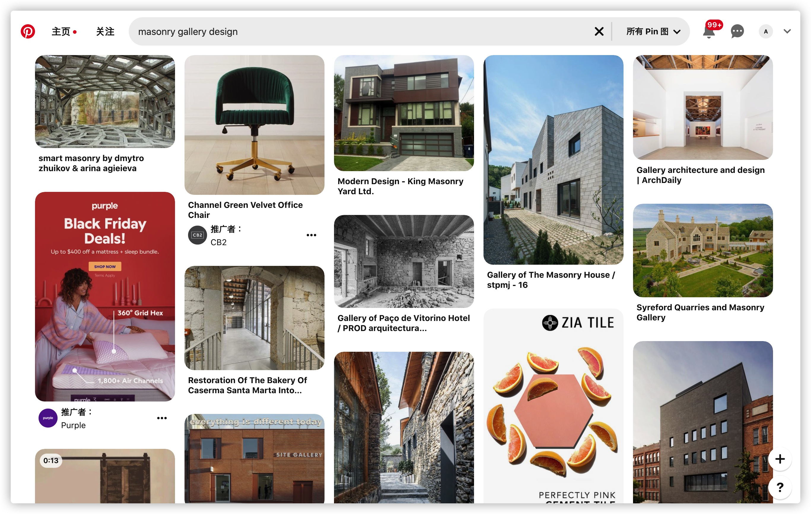</p>

<p>因此，有时候你会听到有人会把这种布局称为 <strong>Pinterest布局</strong>。而且这种模式的布局常用于一些图片展示的Web应用上：</p>

<p></p>

<p>瀑布流布局有着自己独特的特点。在一个容器中有很多项目（通常是图像或像文章的摘要），它们依次一个接一个地按内联方向排列。当他们移到下一行时，项目将移到第一行中较短（高度较低）的项目所留下的任何空隙中。有点类似于我们生活中”砌砖“的方式：</p>

<p></p>

<p>这种布局有点类似于网格布局中自动放置网格项目（Auto Placement）的布局，但又没有严格遵循该布局模式。</p>

<h2 class="content-title" data-index="2">瀑布流布局真的是一个网格布局吗？</h2>

<p>虽然瀑布流布局被纳入到CSS网格布局模块中，那么瀑布流布局真的是一个网格布局吗？就此话题，社区中很多Web专家有着不同的看法。 @Rachel Andrew 曾经这样说过：</p>

<p>网格不是瀑布流，因为它是一个有严格行和列的网格。如果你再看一下瀑布流创建的布局，并没有严格的行和列。</p>

<p>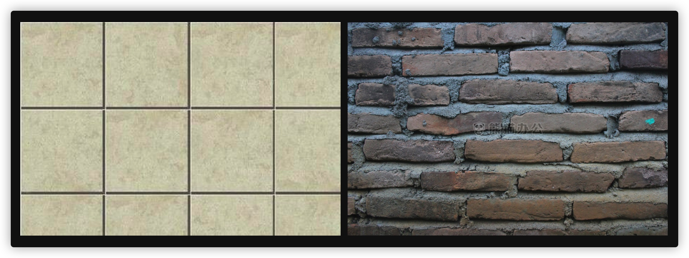</p>

<p>通常情况下，我们有定义好的行，但列的作用更像是一个Flexbox布局，或多列布局。你用多列布局得到的布局和瀑布流布局之间的关键区别是，在多列布局中，项目是按列排列的。通常，在瀑布流布局中，你希望它们按行排列。</p>

<p>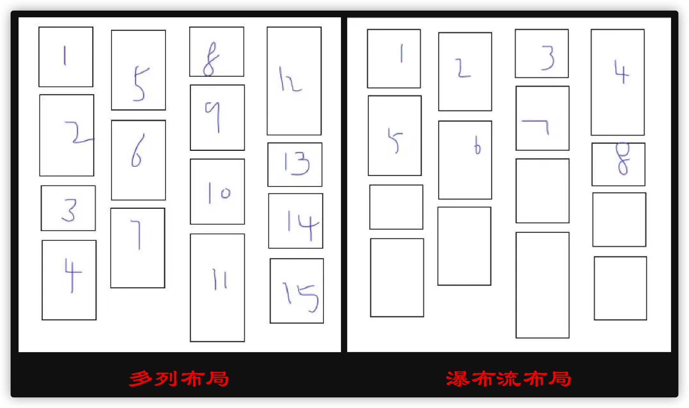</p>

<p>@Rachel Andrew 曾一度建议不要把瀑布流布局作为CSS网格规范的一部分。主要原因是瀑布流布局看上去像网格布局，但它更像是一个相对专业的布局模式，实际上根本不是一个网格。<strong>它更类似于Flexbox布局而不是网格布局</strong>。也基于这个原因，W3C 的 CSS工作小组才把瀑布流布局当作一个独立的规范，就算是要把他和 CSS 网格规范关联起来，也只能说 CSS 瀑布流布局规范是 CSS 网格布局的一个附本。</p>

<p>@Jen也有过类似的观点：</p>

<blockquote>
  <p>CSS 瀑布流布局是一个实验性的属性，正处于规范草案的讨论阶段。它还不是官方的，而且可能会改变。不要在博文（或相关教程）中说这已是 W3C 规范，至今为止还不是规范。它只是一个实验性特性，一个原型而以。如果对瀑布流布局特性有任何想法，都可以在 <a rel="nofollow" href="https://github.com/w3c/csswg-drafts/issues/4650" target="_blank">CSSWG</a> 上发表自己的看法。</p>
</blockquote>

<h2 class="content-title" data-index="2">开启瀑布流布局</h2>

<p>从<a rel="nofollow" href="https://caniuse.com/?search=masonry" target="_blank">Caniuse.com</a>可以得知，支持瀑布流布局的主流浏览器非常的少，到目前为止，只有 Firefox 和 Firefox Nightly 浏览器可以看到瀑布流布局的效果：</p>

<p>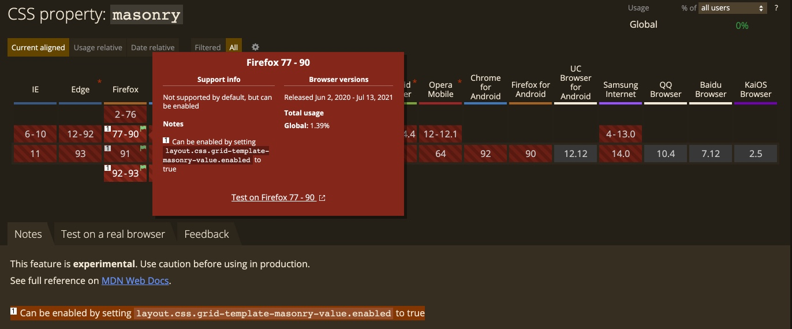</p>

<p>正如上图所示，要在 Firefox 或 Firefox Nightly 浏览器查看瀑布流布局的效果，还需要开启相关的配置。在 Firefox 和 Firefox Nightly浏览器的地址栏中输入 <code>about:config</code>，并且搜索 <strong>"masonry"</strong> 关键词，然后在搜索结果 <code>layout.css.grid-template-masonry-value.enabled</code>标记上双击（鼠标左键双击）其值，从<code>false</code>（默认值）切换到<code>true</code>。</p>

<p>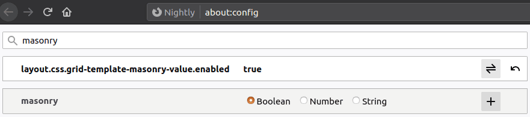</p>

<p>你可以尝试着在修改完配置的Firefox或Firefox Nightly浏览器中打开 <a rel="nofollow" href="https://codepen.io/rachelandrew/full/wvWmZWB" target="_blank">@Rachel Andrew在Codepen上提供的瀑布流案例</a>，可以看到像下图这样的效果：</p>

<p></p>

<h2 class="content-title" data-index="2">我们可以使用成熟的CSS布局方式实现瀑布流布局</h2>

<p>其实在《<a href="https://www.w3cplus.com/css/pure-css-create-masonry-layout.html" target="_blank">纯CSS实现瀑布流布局</a>》一文中，和大家一起探讨了一些实现瀑布流布局的CSS方案。这几种方案中最接近的方案就是使用CSS的多列布局。</p>

<p>我们使用JavaScript在<code>&lt;body&gt;</code>中动态插入<code>51</code>个<code>&lt;div class="item"&gt;</code>，并且设置了相应的背景图像：</p>

<pre class="xml"><code class="xml">for (let i = 0; i <span class="tag"><span class="tag">&lt;<span class="title"><span class="title">=</span></span> <span class="attribute"><span class="attribute">50</span></span>; <span class="attribute"><span class="attribute">i</span></span>++) {
    <span class="attribute"><span class="attribute">const</span></span> <span class="attribute"><span class="attribute">div</span></span> = <span class="attribute"><span class="attribute">document.createElement</span></span>("<span class="attribute"><span class="attribute">div</span></span>");
    <span class="attribute"><span class="attribute">div.classList.add</span></span>("<span class="attribute"><span class="attribute">item</span></span>");
    <span class="attribute"><span class="attribute">div.style.backgroundImage</span></span> = `<span class="attribute"><span class="attribute">url</span></span>(<span class="attribute"><span class="attribute">https:</span></span>//<span class="attribute"><span class="attribute">picsum.photos</span></span>/<span class="attribute"><span class="attribute">500</span></span>/<span class="attribute"><span class="attribute">500</span></span>?<span class="attribute"><span class="attribute">random</span></span>=<span class="value"><span class="value">${i})`;</span></span>
    <span class="attribute"><span class="attribute">document.body.appendChild</span></span>(<span class="attribute"><span class="attribute">div</span></span>);
}
</span></span></code></pre>

<p>给<code>.item</code>设置一些基本样式：</p>

<pre class="css"><code class="css"><span class="class"><span class="class">.item</span></span> <span class="rules"><span class="rules">{
    <span class="rule"><span class="attribute"><span class="rule"><span class="attribute">border-radius</span></span></span><span class="rule">:<span class="value"><span class="value"> <span class="number"><span class="number">10</span></span>px;</span></span></span><span class="value"></span></span>
    <span class="rule"><span class="attribute"><span class="rule"><span class="attribute">background-size</span></span></span><span class="rule">:<span class="value"><span class="value"> cover;</span></span></span><span class="value"></span></span>
    <span class="rule"><span class="attribute"><span class="rule"><span class="attribute">background-position</span></span></span><span class="rule">:<span class="value"><span class="value"> center;</span></span></span><span class="value"></span></span>
    <span class="rule"><span class="attribute"><span class="rule"><span class="attribute">height</span></span></span><span class="rule">:<span class="value"><span class="value"> <span class="number"><span class="number">10</span></span>em;</span></span></span><span class="value"></span></span>
    <span class="rule"><span class="attribute"><span class="rule"><span class="attribute">position</span></span></span><span class="rule">:<span class="value"><span class="value"> relative;</span></span></span><span class="value"></span></span>
    <span class="rule"><span class="attribute"><span class="rule"><span class="attribute">display</span></span></span><span class="rule">:<span class="value"><span class="value"> grid;</span></span></span><span class="value"></span></span>
    <span class="rule"><span class="attribute"><span class="rule"><span class="attribute">grid-template-rows</span></span></span><span class="rule">:<span class="value"><span class="value"> <span class="number"><span class="number">1</span></span>fr auto;</span></span></span><span class="value"></span></span>
    <span class="rule"><span class="attribute"><span class="rule"><span class="attribute">margin-bottom</span></span></span><span class="rule">:<span class="value"><span class="value"> <span class="number"><span class="number">10</span></span>px;</span></span></span><span class="value"></span></span>
    <span class="rule"><span class="attribute"><span class="rule"><span class="attribute">break-inside</span></span></span><span class="rule">:<span class="value"><span class="value"> avoid;</span></span></span><span class="value"></span></span>
<span class="rule"><span class="rule">}</span></span></span><span class="rule"></span></span>
</code></pre>

<p>并且给一些<code>.item</code>设置不同的高度：</p>

<pre class="css"><code class="css"><span class="class"><span class="class">.item</span></span><span class="pseudo"><span class="pseudo">:nth-child(2n)</span></span> <span class="rules"><span class="rules">{
    <span class="rule"><span class="attribute"><span class="rule"><span class="attribute">height</span></span></span><span class="rule">:<span class="value"><span class="value"> <span class="number"><span class="number">14</span></span>em;</span></span></span><span class="value"></span></span>
<span class="rule"><span class="rule">}</span></span></span><span class="rule"></span></span>

<span class="class"><span class="class">.item</span></span><span class="pseudo"><span class="pseudo">:nth-child(3n)</span></span> <span class="rules"><span class="rules">{
    <span class="rule"><span class="attribute"><span class="rule"><span class="attribute">height</span></span></span><span class="rule">:<span class="value"><span class="value"> <span class="number"><span class="number">18</span></span>em;</span></span></span><span class="value"></span></span>
<span class="rule"><span class="rule">}</span></span></span><span class="rule"></span></span>

<span class="class"><span class="class">.item</span></span><span class="pseudo"><span class="pseudo">:nth-child(4n)</span></span> <span class="rules"><span class="rules">{
    <span class="rule"><span class="attribute"><span class="rule"><span class="attribute">height</span></span></span><span class="rule">:<span class="value"><span class="value"> <span class="number"><span class="number">22</span></span>em;</span></span></span><span class="value"></span></span>
<span class="rule"><span class="rule">}</span></span></span><span class="rule"></span></span>

<span class="class"><span class="class">.item</span></span><span class="pseudo"><span class="pseudo">:nth-child(5n)</span></span> <span class="rules"><span class="rules">{
    <span class="rule"><span class="attribute"><span class="rule"><span class="attribute">height</span></span></span><span class="rule">:<span class="value"><span class="value"> <span class="number"><span class="number">24</span></span>em;</span></span></span><span class="value"></span></span>
<span class="rule"><span class="rule">}</span></span></span><span class="rule"></span></span>

<span class="class"><span class="class">.item</span></span><span class="pseudo"><span class="pseudo">:nth-child(6n)</span></span> <span class="rules"><span class="rules">{
    <span class="rule"><span class="attribute"><span class="rule"><span class="attribute">height</span></span></span><span class="rule">:<span class="value"><span class="value"> <span class="number"><span class="number">30</span></span>em;</span></span></span><span class="value"></span></span>
<span class="rule"><span class="rule">}</span></span></span><span class="rule"></span></span>

<span class="class"><span class="class">.item</span></span><span class="pseudo"><span class="pseudo">:nth-child(7n)</span></span> <span class="rules"><span class="rules">{
    <span class="rule"><span class="attribute"><span class="rule"><span class="attribute">height</span></span></span><span class="rule">:<span class="value"><span class="value"> <span class="number"><span class="number">34</span></span>em;</span></span></span><span class="value"></span></span>
<span class="rule"><span class="rule">}</span></span></span><span class="rule"></span></span>

<span class="class"><span class="class">.item</span></span><span class="pseudo"><span class="pseudo">:nth-child(8n)</span></span> <span class="rules"><span class="rules">{
    <span class="rule"><span class="attribute"><span class="rule"><span class="attribute">height</span></span></span><span class="rule">:<span class="value"><span class="value"> <span class="number"><span class="number">40</span></span>em;</span></span></span><span class="value"></span></span>
<span class="rule"><span class="rule">}</span></span></span><span class="rule"></span></span>
</code></pre>

<p>在<code>body</code>使用<code>column-count</code>和<code>column-gap</code>来设置列数和列与列之间的间距：</p>

<pre class="css"><code class="css"><span class="tag"><span class="tag">body</span></span> <span class="rules"><span class="rules">{
    <span class="rule"><span class="attribute"><span class="rule"><span class="attribute">column-count</span></span></span><span class="rule">:<span class="value"><span class="value"> <span class="number"><span class="number">4</span></span>;</span></span></span><span class="value"></span></span>
    <span class="rule"><span class="attribute"><span class="rule"><span class="attribute">column-gap</span></span></span><span class="rule">:<span class="value"><span class="value"> <span class="number"><span class="number">10</span></span>px;</span></span></span><span class="value"></span></span>
<span class="rule"><span class="rule">}</span></span></span><span class="rule"></span></span>
</code></pre>

<p>效果如下：</p>

<div style="margin-bottom: 20px">
<iframe height="600" style="width: 100%;" scrolling="no" title="Masonry Layout with CSS Multi-column" src="./Grid布局：17-瀑布流布局_files/yLJqgbQ.html" frameborder="no" loading="lazy" allowtransparency="true" allowfullscreen="true">
  See the Pen <a rel="nofollow" href="https://codepen.io/airen/pen/yLJqgbQ">
  Masonry Layout with CSS Multi-column</a> by Airen (<a rel="nofollow" href="https://codepen.io/airen">@airen</a>)
  on <a rel="nofollow" href="https://codepen.io">CodePen</a>.
</iframe>
</div>

<p>从上面的效果来看，它看起来像瀑布流布局。但是，每外项目的顺序是按列排列的。如果是一个搜索结果页面，期望搜索出来的结果是排列在前面，比如说页面最顶部就能看到搜索的结果，而不是像上面的示例效果，排在前面的都在第一列。</p>

<p>在使用CSS网格模块来构建瀑布流布局时，我原以为 <strong>CSS网格布局中的自动定位（Auto Placement）</strong> 特性可以让网格项目自动排列：</p>

<p>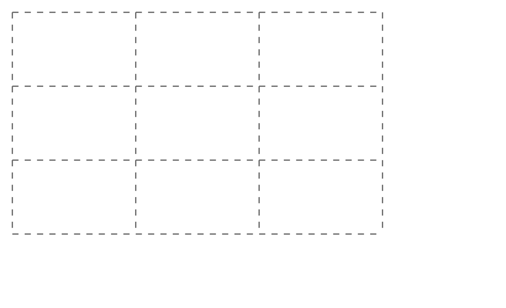</p>

<p>我们在上面的示例基础上稍作调整，使用CSS网格来实现瀑布流布局：</p>

<pre class="css"><code class="css"><span class="tag"><span class="tag">body</span></span> <span class="rules"><span class="rules">{
    <span class="rule"><span class="attribute"><span class="rule"><span class="attribute">display</span></span></span><span class="rule">:<span class="value"><span class="value"> grid;</span></span></span><span class="value"></span></span>
    <span class="rule"><span class="attribute"><span class="rule"><span class="attribute">grid-template-columns</span></span></span><span class="rule">:<span class="value"><span class="value"> <span class="function"><span class="function">repeat(<span class="number"><span class="number">4</span></span>, <span class="number"><span class="number">1</span></span>fr)</span></span>;</span></span></span><span class="value"></span></span>
    <span class="rule"><span class="attribute"><span class="rule"><span class="attribute">grid-auto-flow</span></span></span><span class="rule">:<span class="value"><span class="value"> dense;</span></span></span><span class="value"></span></span>
    <span class="rule"><span class="attribute"><span class="rule"><span class="attribute">gap</span></span></span><span class="rule">:<span class="value"><span class="value"> <span class="number"><span class="number">10</span></span>px;</span></span></span><span class="value"></span></span>
<span class="rule"><span class="rule">}</span></span></span><span class="rule"></span></span>

<span class="class"><span class="class">.item</span></span> <span class="rules"><span class="rules">{
    <span class="rule"><span class="attribute"><span class="rule"><span class="attribute">border-radius</span></span></span><span class="rule">:<span class="value"><span class="value"> <span class="number"><span class="number">10</span></span>px;</span></span></span><span class="value"></span></span>
    <span class="rule"><span class="attribute"><span class="rule"><span class="attribute">background-size</span></span></span><span class="rule">:<span class="value"><span class="value"> cover;</span></span></span><span class="value"></span></span>
    <span class="rule"><span class="attribute"><span class="rule"><span class="attribute">background-position</span></span></span><span class="rule">:<span class="value"><span class="value"> center;</span></span></span><span class="value"></span></span>
    <span class="rule"><span class="attribute"><span class="rule"><span class="attribute">height</span></span></span><span class="rule">:<span class="value"><span class="value"> <span class="number"><span class="number">10</span></span>em;</span></span></span><span class="value"></span></span>
    <span class="rule"><span class="attribute"><span class="rule"><span class="attribute">position</span></span></span><span class="rule">:<span class="value"><span class="value"> relative;</span></span></span><span class="value"></span></span>
<span class="rule"><span class="rule">}</span></span></span><span class="rule"></span></span>
</code></pre>

<p>效果如下：</p>

<div style="margin-bottom: 20px">
<iframe height="600" style="width: 100%;" scrolling="no" title="Masonry Layout with CSS Grid" src="./Grid布局：17-瀑布流布局_files/ZEOjRBJ.html" frameborder="no" loading="lazy" allowtransparency="true" allowfullscreen="true">
  See the Pen <a rel="nofollow" href="https://codepen.io/airen/pen/ZEOjRBJ">
  Masonry Layout with CSS Grid</a> by Airen (<a rel="nofollow" href="https://codepen.io/airen">@airen</a>)
  on <a rel="nofollow" href="https://codepen.io">CodePen</a>.
</iframe>
</div>

<p>虽然<code>grid-auto-flow: dense;</code>可以实现网格项目自动定位，但它仍然是一个网格布局，无法让网格项目自动往上排列，来填充顶部相邻的网格单元留下的空白：</p>

<p>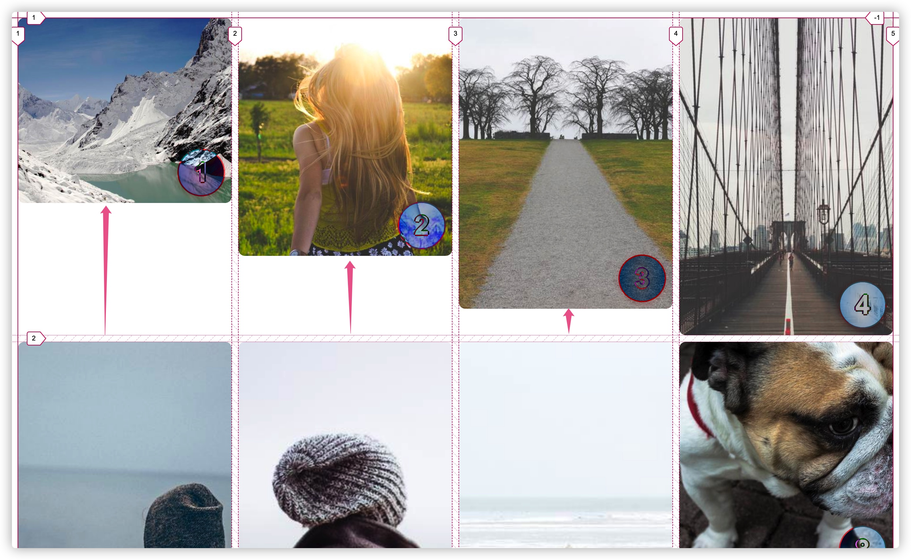</p>

<p>使用该方案要实现真正的瀑布流布局，仍然离不开JavaScript。使用JavaScript改进的案例可以参阅@Andy Barefoot的《<a rel="nofollow" href="https://medium.com/@andybarefoot/a-masonry-style-layout-using-css-grid-8c663d355ebb" target="_blank">Masonry style layout with CSS Grid</a>》文章中提供的案例：</p>

<div style="margin-bottom: 20px">
<iframe height="600" style="width: 100%;" scrolling="no" title="CSS Grid Masonry (Step 10)" src="./Grid布局：17-瀑布流布局_files/QMeZda.html" frameborder="no" loading="lazy" allowtransparency="true" allowfullscreen="true">
  See the Pen <a rel="nofollow" href="https://codepen.io/andybarefoot/pen/QMeZda">
  CSS Grid Masonry (Step 10)</a> by Andy Barefoot (<a rel="nofollow" href="https://codepen.io/andybarefoot">@andybarefoot</a>)
  on <a rel="nofollow" href="https://codepen.io">CodePen</a>.
</iframe>
</div>

<h2 class="content-title" data-index="2">网格布局的瀑布流特性</h2>

<p>上面我们看到的两种CSS实现瀑布流布局的方案可以说不是正宗的。<a rel="nofollow" href="https://drafts.csswg.org/css-grid-3/" target="_blank">CSS Grid Level 3</a>正在讨论的规范和相关特性才是专门为瀑布流布局服务的。</p>

<p>CSS在 <code>grid-template-columns</code> 和 <code>grid-template-rows</code> 属性上提供了一个新的属性值，即 <code>masonry</code>。在网格容器上可以使用这两个属性来显式地指定网格的列和行。比如：</p>

<pre class="css"><code class="css"><span class="class"><span class="class">.grid-container</span></span> <span class="rules"><span class="rules">{
    <span class="rule"><span class="attribute"><span class="rule"><span class="attribute">display</span></span></span><span class="rule">:<span class="value"><span class="value"> grid;</span></span></span><span class="value"></span></span>
    <span class="rule"><span class="attribute"><span class="rule"><span class="attribute">grid-template-columns</span></span></span><span class="rule">:<span class="value"><span class="value"> <span class="number"><span class="number">300</span></span>px <span class="number"><span class="number">1</span></span>fr <span class="number"><span class="number">300</span></span>px;</span></span></span><span class="value"></span></span>
    <span class="rule"><span class="attribute"><span class="rule"><span class="attribute">grid-template-rows</span></span></span><span class="rule">:<span class="value"><span class="value"> <span class="function"><span class="function">repeat(<span class="number"><span class="number">2</span></span>, auto)</span></span>;</span></span></span><span class="value"></span></span>
    <span class="rule"><span class="attribute"><span class="rule"><span class="attribute">gap</span></span></span><span class="rule">:<span class="value"><span class="value"> <span class="number"><span class="number">10</span></span>px;</span></span></span><span class="value"></span></span>
<span class="rule"><span class="rule">}</span></span></span><span class="rule"></span></span>
</code></pre>

<p>上面的代码创建了一个两行三列的网格：</p>

<p>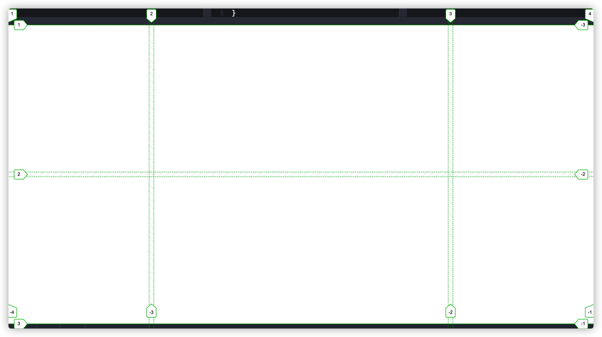</p>

<p>也就是说，如果我们要创建一个瀑布流布局，我们就需要在 <code>grid-template-columns</code> 或 <code>grid-template-rows</code> 上显式的设置值为 <code>masonry</code>，比如：</p>

<pre class="css"><code class="css"><span class="tag"><span class="tag">body</span></span> <span class="rules"><span class="rules">{ 
    <span class="rule"><span class="attribute"><span class="rule"><span class="attribute">display</span></span></span><span class="rule">:<span class="value"><span class="value"> grid;</span></span></span><span class="value"></span></span> 
    <span class="rule"><span class="attribute"><span class="rule"><span class="attribute">grid-template-columns</span></span></span><span class="rule">:<span class="value"><span class="value"> <span class="function"><span class="function">repeat(<span class="number"><span class="number">4</span></span>, <span class="number"><span class="number">1</span></span>fr)</span></span>;</span></span></span><span class="value"></span></span> 
    <span class="rule"><span class="attribute"><span class="rule"><span class="attribute">grid-template-rows</span></span></span><span class="rule">:<span class="value"><span class="value"> masonry;</span></span></span><span class="value"></span></span> 
<span class="rule"><span class="rule">}</span></span></span><span class="rule"></span></span>
</code></pre>

<div style="margin-bottom: 20px">
<iframe height="600" style="width: 100%;" scrolling="no" title="Masonry Layout with CSS Grid(grid-template-rows: masonry)" src="./Grid布局：17-瀑布流布局_files/zYBLgew.html" frameborder="no" loading="lazy" allowtransparency="true" allowfullscreen="true">
  See the Pen <a rel="nofollow" href="https://codepen.io/airen/pen/zYBLgew">
  Masonry Layout with CSS Grid(grid-template-rows: masonry)</a> by Airen (<a rel="nofollow" href="https://codepen.io/airen">@airen</a>)
  on <a rel="nofollow" href="https://codepen.io">CodePen</a>.
</iframe>
</div>

<p>如果你使用Firefox浏览器查看的话这个示例的话，看到的效果像下面这样：</p>

<div style="margin-bottom: 20px">
<video controls="" width="100%" style="width: 100%; aspect-ratio: 16 / 9;" poster="/sites/default/files/blogs/2021/2109/css-masonry-4.jpg">
    <source src="/sites/default/files/blogs/2021/2109/css-masonry-4.mp4" type="video/mp4">
</video>
</div>

<p>再来看 <code>grid-template-columns</code> 上使用 <code>masonry</code>：</p>

<pre class="css"><code class="css"><span class="tag"><span class="tag">body</span></span> <span class="rules"><span class="rules">{
    <span class="rule"><span class="attribute"><span class="rule"><span class="attribute">display</span></span></span><span class="rule">:<span class="value"><span class="value"> grid;</span></span></span><span class="value"></span></span>
    <span class="rule"><span class="attribute"><span class="rule"><span class="attribute">grid-template-columns</span></span></span><span class="rule">:<span class="value"><span class="value"> masonry;</span></span></span><span class="value"></span></span>
    <span class="rule"><span class="attribute"><span class="rule"><span class="attribute">grid-template-rows</span></span></span><span class="rule">:<span class="value"><span class="value"> <span class="function"><span class="function">repeat(<span class="number"><span class="number">4</span></span>, <span class="number"><span class="number">1</span></span>fr)</span></span>;</span></span></span><span class="value"></span></span>
    <span class="rule"><span class="attribute"><span class="rule"><span class="attribute">gap</span></span></span><span class="rule">:<span class="value"><span class="value"> <span class="number"><span class="number">10</span></span>px;</span></span></span><span class="value"></span></span>
<span class="rule"><span class="rule">}</span></span></span><span class="rule"></span></span>
</code></pre>

<div style="margin-bottom: 20px">
<iframe height="600" style="width: 100%;" scrolling="no" title="Masonry Layout with CSS Grid(grid-template-columns: masonry)" src="./Grid布局：17-瀑布流布局_files/abZjexy.html" frameborder="no" loading="lazy" allowtransparency="true" allowfullscreen="true">
  See the Pen <a rel="nofollow" href="https://codepen.io/airen/pen/abZjexy">
  Masonry Layout with CSS Grid(grid-template-columns: masonry)</a> by Airen (<a rel="nofollow" href="https://codepen.io/airen">@airen</a>)
  on <a rel="nofollow" href="https://codepen.io">CodePen</a>.
</iframe>
</div>

<p>效果如下：</p>

<div style="margin-bottom: 20px">
<video controls="" width="100%" style="width: 100%; aspect-ratio: 16 / 9;" poster="/sites/default/files/blogs/2021/2109/css-masonry-5.jpg">
    <source src="/sites/default/files/blogs/2021/2109/css-masonry-5.mp4" type="video/mp4">
</video>
</div>

<p><code>grid-template-rows</code> 和 <code>grid-template-columns</code> 取值为 <code>masonry</code> 两者之间的差异如下图所示：</p>

<p>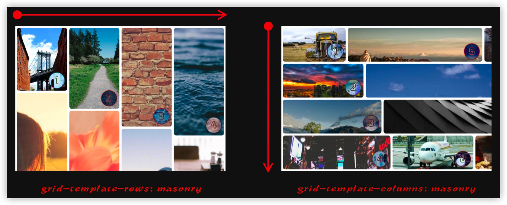</p>

<p>也可以同时在 <code>grid-template-columns</code> 和 <code>grid-template-rows</code> 设置值为 <code>masonry</code> ，只不过这个时候<code>grid-template-columns</code> 使用的值为<code>none</code> (计算值)。</p>

<p>如果要使用瀑布流布局，那么网格轴（<code>grid-template-columns</code> 或 <code>grid-template-rows</code>）至少有一个值是 <code>masonry</code>。也就是说，显式在 <code>grid-template-columns</code> 或 <code>grid-template-rows</code> 设置值为 <code>masonry</code> 时，该轴就变成了瀑布轴（Masonry Axis），另一个轴将是网格轴：</p>

<p>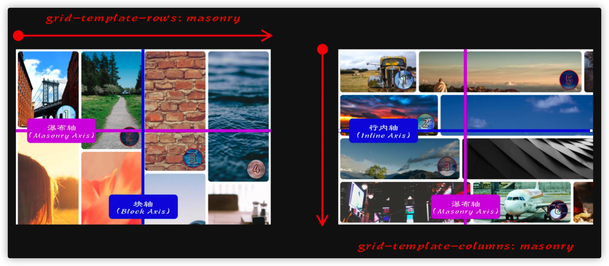</p>

<p>这样就允许我们在网格轴中使用CSS网格的全部功能。比如可以指定网格线，网格轨道大小，在网格轨道中放置网格项目，也可以对网格行或列进行合并等。比如下面这个示例：</p>

<pre class="css"><code class="css"><span class="tag"><span class="tag">body</span></span> <span class="rules"><span class="rules">{
    <span class="rule"><span class="attribute"><span class="rule"><span class="attribute">display</span></span></span><span class="rule">:<span class="value"><span class="value"> grid;</span></span></span><span class="value"></span></span>
    <span class="rule"><span class="attribute"><span class="rule"><span class="attribute">grid-template-columns</span></span></span><span class="rule">:<span class="value"><span class="value"> <span class="function"><span class="function">repeat(<span class="number"><span class="number">4</span></span>, <span class="number"><span class="number">1</span></span>fr)</span></span>;</span></span></span><span class="value"></span></span>
    <span class="rule"><span class="attribute"><span class="rule"><span class="attribute">grid-template-rows</span></span></span><span class="rule">:<span class="value"><span class="value"> masonry;</span></span></span><span class="value"></span></span>
    <span class="rule"><span class="attribute"><span class="rule"><span class="attribute">gap</span></span></span><span class="rule">:<span class="value"><span class="value"> <span class="number"><span class="number">10</span></span>px;</span></span></span><span class="value"></span></span>
<span class="rule"><span class="rule">}</span></span></span><span class="rule"></span></span>

<span class="tag"><span class="tag">div</span></span><span class="pseudo"><span class="pseudo">:nth-of-type(1)</span></span> <span class="rules"><span class="rules">{
    <span class="rule"><span class="attribute"><span class="rule"><span class="attribute">grid-column</span></span></span><span class="rule">:<span class="value"><span class="value"> <span class="number"><span class="number">1</span></span> / <span class="number"><span class="number">3</span></span>;</span></span></span><span class="value"></span></span>
<span class="rule"><span class="rule">}</span></span></span><span class="rule"></span></span>

<span class="tag"><span class="tag">div</span></span><span class="pseudo"><span class="pseudo">:nth-of-type(2)</span></span> <span class="rules"><span class="rules">{
    <span class="rule"><span class="attribute"><span class="rule"><span class="attribute">grid-area</span></span></span><span class="rule">:<span class="value"><span class="value"> <span class="number"><span class="number">1</span></span> / <span class="number"><span class="number">3</span></span> / <span class="number"><span class="number">2</span></span> / <span class="number"><span class="number">5</span></span>;</span></span></span><span class="value"></span></span>
<span class="rule"><span class="rule">}</span></span></span><span class="rule"></span></span>

<span class="tag"><span class="tag">div</span></span><span class="pseudo"><span class="pseudo">:nth-of-type(3)</span></span> <span class="rules"><span class="rules">{
    <span class="rule"><span class="attribute"><span class="rule"><span class="attribute">grid-column</span></span></span><span class="rule">:<span class="value"><span class="value"> span <span class="number"><span class="number">3</span></span>;</span></span></span><span class="value"></span></span>
<span class="rule"><span class="rule">}</span></span></span><span class="rule"></span></span>
</code></pre>

<div style="margin-bottom: 20px">
<iframe height="600" style="width: 100%;" scrolling="no" title="Masonry Layout: masonry spanning" src="./Grid布局：17-瀑布流布局_files/oNLPNax.html" frameborder="no" loading="lazy" allowtransparency="true" allowfullscreen="true">
  See the Pen <a rel="nofollow" href="https://codepen.io/airen/pen/oNLPNax">
  Masonry Layout: masonry spanning</a> by Airen (<a rel="nofollow" href="https://codepen.io/airen">@airen</a>)
  on <a rel="nofollow" href="https://codepen.io">CodePen</a>.
</iframe>
</div>

<p>效果如下：</p>

<div style="margin-bottom: 20px">
<video controls="" width="100%" style="width: 100%; aspect-ratio: 16 / 9;" poster="/sites/default/files/blogs/2021/2109/css-masonry-6.jpg">
    <source src="/sites/default/files/blogs/2021/2109/css-masonry-6.mp4" type="video/mp4">
</video>
</div>

<p>使用浏览器开发者工具查看网格线的编号：</p>

<p>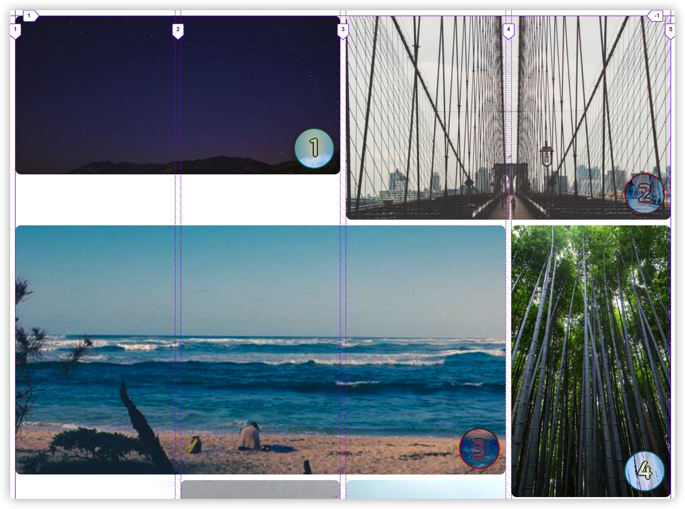</p>

<h3 class="content-title" data-index="3">masonry-auto-flow</h3>

<p><code>masonry-auto-flow</code> 是专门为瀑布流布局定义的属性。该属性的主要使用是 让你在瀑布流布局中可以控制瀑布流布局中的项目流（每个网格项目）。它主要接受的值主要有：</p>

<pre class="http"><code class="http"><span class="attribute"><span class="attribute">masonry-auto-flow</span></span>: <span class="string"><span class="string"> [ pack | next ] || [definite-first | ordered ] </span></span>
</code></pre>

<p>它的默认值为<code>pack</code>，该属性只能用于瀑布流布局的网格容器上。</p>

<p>首先，可以通过 <code>masonry-auto-flow: ordered</code> 将导致瀑布流布局中忽略有确定位置的项目，这样就可以使用<code>order</code>修改文档顺序。其次，还可以通过指定<code>masonry-auto-flow</code>指定值为<code>next</code>，来将网格项目依次放置在网格轴上，而不是像上面描述的那样将它们放置在剩余空间最多的轨道上。比如下面这个示例：</p>

<pre class="xml"><code class="xml"><span class="comment"><span class="comment">&lt;!-- HTML --&gt;</span></span>
<span class="tag"><span class="tag">&lt;<span class="title"><span class="title">div</span></span> <span class="attribute"><span class="attribute">class</span></span>=<span class="value"><span class="value">"grid-container"</span></span>&gt;</span></span>
    <span class="tag"><span class="tag">&lt;<span class="title"><span class="title">div</span></span> <span class="attribute"><span class="attribute">class</span></span>=<span class="value"><span class="value">"grid-item"</span></span>&gt;</span></span>1<span class="tag"><span class="tag">&lt;/<span class="title"><span class="title">div</span></span>&gt;</span></span>
    <span class="tag"><span class="tag">&lt;<span class="title"><span class="title">div</span></span> <span class="attribute"><span class="attribute">class</span></span>=<span class="value"><span class="value">"grid-item"</span></span>&gt;</span></span>2<span class="tag"><span class="tag">&lt;/<span class="title"><span class="title">div</span></span>&gt;</span></span>
    <span class="tag"><span class="tag">&lt;<span class="title"><span class="title">div</span></span> <span class="attribute"><span class="attribute">class</span></span>=<span class="value"><span class="value">"grid-item"</span></span>&gt;</span></span>3<span class="tag"><span class="tag">&lt;/<span class="title"><span class="title">div</span></span>&gt;</span></span>
    <span class="tag"><span class="tag">&lt;<span class="title"><span class="title">div</span></span> <span class="attribute"><span class="attribute">class</span></span>=<span class="value"><span class="value">"grid-item"</span></span>&gt;</span></span>4<span class="tag"><span class="tag">&lt;/<span class="title"><span class="title">div</span></span>&gt;</span></span>
<span class="tag"><span class="tag">&lt;/<span class="title"><span class="title">div</span></span>&gt;</span></span>

/* CSS */
.grid-container {
    display: inline-grid;
    grid: masonry / repeat(3, 1fr);
    border: 1px solid;
    masonry-auto-flow: next;
}
</code></pre>

<div style="margin-bottom: 20px">
<iframe height="600" style="width: 100%;" scrolling="no" title="Masonry Layout: masonry-auto-flow: next" src="./Grid布局：17-瀑布流布局_files/rNLqWyy.html" frameborder="no" loading="lazy" allowtransparency="true" allowfullscreen="true">
  See the Pen <a rel="nofollow" href="https://codepen.io/airen/pen/rNLqWyy">
  Masonry Layout: masonry-auto-flow: next</a> by Airen (<a rel="nofollow" href="https://codepen.io/airen">@airen</a>)
  on <a rel="nofollow" href="https://codepen.io">CodePen</a>.
</iframe>
</div>

<p>效果如下：</p>

<p>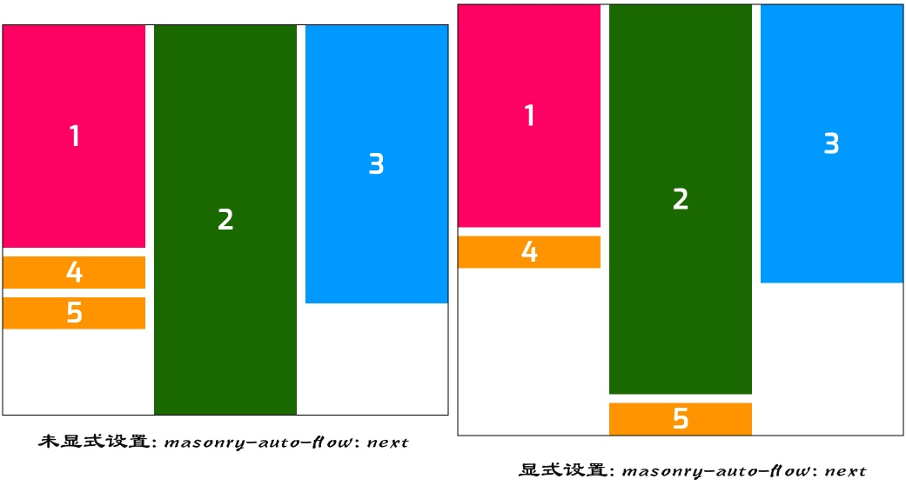</p>

<h3 class="content-title" data-index="3">justify-tracks 和 align-tracks</h3>

<p><a rel="nofollow" href="https://www.w3.org/TR/css-align-3/" target="_blank"><strong>CSS Box Alignment Module Level 3 规范</strong></a> 提供了用于Flexbox容器，Grid容器，Flex项目和Grid项目上的对齐属性。在瀑布流布局新增了<code>justify-tracks</code>和<code>align-tracks</code>属性。当瀑布流是在块轴（Column）方向时，<code>justify-tracks</code>有效；当瀑布流是在内联轴（Row）方向时，<code>align-tracks</code>有效。</p>

<pre class="javascript"><code class="javascript">align-tracks: [normal | <span class="xml"><span class="tag"><span class="xml"><span class="tag">&lt;<span class="title"><span class="title">baseline-position</span></span>&gt;</span></span></span><span class="xml"> | <span class="tag"><span class="tag">&lt;<span class="title"><span class="title">content-distribution</span></span>&gt;</span></span> | <span class="tag"><span class="tag">&lt;<span class="title"><span class="title">overflow-position</span></span>&gt;</span></span>? <span class="tag"><span class="tag">&lt;<span class="title"><span class="title">content-position</span></span>&gt;</span></span>]#

justify-tracks: [normal | <span class="tag"><span class="tag">&lt;<span class="title"><span class="title">content-distribution</span></span>&gt;</span></span> | <span class="tag"><span class="tag">&lt;<span class="title"><span class="title">overflow-position</span></span>&gt;</span></span>? [ <span class="tag"><span class="tag">&lt;<span class="title"><span class="title">content-position</span></span>&gt;</span></span> | left | right ] ]#

<span class="tag"><span class="tag">&lt;<span class="title"><span class="title">baseline-position</span></span>&gt;</span></span> = [ first | last ]? &amp;&amp; baseline
<span class="tag"><span class="tag">&lt;<span class="title"><span class="title">content-distribution</span></span>&gt;</span></span> = space-between | space-around | space-evenly | stretch
<span class="tag"><span class="tag">&lt;<span class="title"><span class="title">overflow-position</span></span>&gt;</span></span> = unsafe | safe
<span class="tag"><span class="tag">&lt;<span class="title"><span class="title">content-position</span></span>&gt;</span></span> = center | start | end | flex-start | flex-end
</span></span></code></pre>

<p><code>align-tracks</code> 和 <code>justify-tracks</code> 的默认值都是<code>normal</code>，而且都应该应用在是瀑布流布局的网格容器上。他们的属性值和<code>align-content</code>、<code>justify-content</code>相同，不同的是<code>align-tracks</code>和<code>justtify-tracks</code>可以接受以逗号（<code>,</code>）分隔的多个值。</p>

<p>先来感受一下，<code>align-content</code> 和 <code>justify-content</code> 在Flexbox容器和Grid容器中的效果：</p>

<div style="margin-bottom: 20px">
<iframe height="600" style="width: 100%;" scrolling="no" title="justify-content and align-content in Flexbox (Grid) containers" src="./Grid布局：17-瀑布流布局_files/jOreBGd.html" frameborder="no" loading="lazy" allowtransparency="true" allowfullscreen="true">
  See the Pen <a rel="nofollow" href="https://codepen.io/airen/pen/jOreBGd">
  justify-content and align-content in Flexbox (Grid) containers</a> by Airen (<a rel="nofollow" href="https://codepen.io/airen">@airen</a>)
  on <a rel="nofollow" href="https://codepen.io">CodePen</a>.
</iframe>
</div>

<p>这里暂且忽略Flexbox容器上<code>justify-content</code>和<code>align-content</code>。单独来看网格容器，假设网格轨道整体占据的空间小于网格容器，那么就可以在容器中对齐网格轨道。针对块方向和文本方向的轴线，分别使用 <code>align-content</code> 对齐到块方向的轴线，使用 <code>justify-content</code> 对齐到文本方向的轴线。</p>

<p>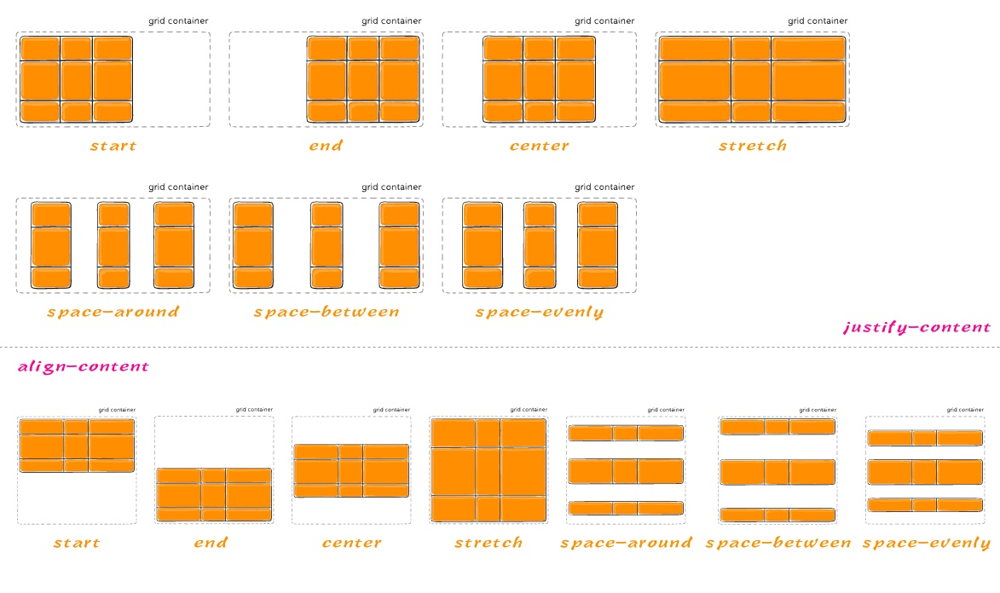</p>

<p>瀑布流也是网格布局中的一种，那么<code>align-content</code>和<code>justify-content</code>也可以运用到瀑布流容器上，但不同的是，对于瀑布流轴，这两个属性是不生效的，在瀑布流轴上，分别被<code>align-tracks</code>和<code>justify-tracks</code>替代。比如下面这个示例：</p>

<pre class="css"><code class="css"><span class="tag"><span class="tag">body</span></span> <span class="rules"><span class="rules">{
    <span class="rule"><span class="attribute"><span class="rule"><span class="attribute">display</span></span></span><span class="rule">:<span class="value"><span class="value"> grid;</span></span></span><span class="value"></span></span>
    <span class="rule"><span class="attribute"><span class="rule"><span class="attribute">grid-template-columns</span></span></span><span class="rule">:<span class="value"><span class="value"> <span class="function"><span class="function">repeat(<span class="number"><span class="number">4</span></span>, <span class="number"><span class="number">160</span></span>px)</span></span>;</span></span></span><span class="value"></span></span>
    <span class="rule"><span class="attribute"><span class="rule"><span class="attribute">grid-template-rows</span></span></span><span class="rule">:<span class="value"><span class="value"> masonry;</span></span></span><span class="value"></span></span>
    <span class="rule"><span class="attribute"><span class="rule"><span class="attribute">gap</span></span></span><span class="rule">:<span class="value"><span class="value"> <span class="number"><span class="number">10</span></span>px;</span></span></span><span class="value"></span></span>

    <span class="rule"><span class="attribute"><span class="rule"><span class="attribute">justify-content</span></span></span><span class="rule">:<span class="value"><span class="value"> <span class="function"><span class="function">var(--justify-content)</span></span>;</span></span></span><span class="value"></span></span>
    <span class="rule"><span class="attribute"><span class="rule"><span class="attribute">align-content</span></span></span><span class="rule">:<span class="value"><span class="value"> <span class="function"><span class="function">var(--align-content)</span></span>;</span></span></span><span class="value"></span></span>
    <span class="rule"><span class="attribute"><span class="rule"><span class="attribute">align-tracks</span></span></span><span class="rule">:<span class="value"><span class="value"> <span class="function"><span class="function">var(--align-tracks)</span></span>;</span></span></span><span class="value"></span></span>
<span class="rule"><span class="rule">}</span></span></span><span class="rule"></span></span>
</code></pre>

<p>就上面示例而言，当<code>grid-template-rows</code>设置值为<code>masonry</code>时，内联轴（Row Axis）是对应的瀑布流轴，块轴(Column Axis)是网格轴。在这种情况之下，<code>align-content</code>在瀑布轴上是不生效的，同时被<code>align-tracks</code>替代（这个时候<code>align-tracks</code>相当于<code>align-content</code>），具体效果如下：</p>

<div style="margin-bottom: 20px">
<iframe height="600" style="width: 100%;" scrolling="no" title="Masonry Layout: align-tracks" src="./Grid布局：17-瀑布流布局_files/zYBmPYj.html" frameborder="no" loading="lazy" allowtransparency="true" allowfullscreen="true">
  See the Pen <a rel="nofollow" href="https://codepen.io/airen/pen/zYBmPYj">
  Masonry Layout: align-tracks</a> by Airen (<a rel="nofollow" href="https://codepen.io/airen">@airen</a>)
  on <a rel="nofollow" href="https://codepen.io">CodePen</a>.
</iframe>
</div>

<p>切换示例中<code>justify-content</code>、<code>align-content</code> 和 <code>align-tracks</code> 的效果如下：</p>

<div style="margin-bottom: 20px">
<video controls="" width="100%" style="width: 100%; aspect-ratio: 16 / 9;" poster="/sites/default/files/blogs/2021/2109/css-masonry-7.jpg">
    <source src="/sites/default/files/blogs/2021/2109/css-masonry-7.mp4" type="video/mp4">
</video>
</div>

<p>再来看另外一个场景，就是<code>grid-template-columns</code>设置为<code>masonry</code>，这个时候内联轴（Row Axis）是网格轴，块轴（Column Axis）是瀑布轴。在这种情况之下，<code>justify-content</code>在瀑布轴上不生效，同时被<code>justify-tracks</code>替代：</p>

<pre class="css"><code class="css"><span class="tag"><span class="tag">body</span></span> <span class="rules"><span class="rules">{
    <span class="rule"><span class="attribute"><span class="rule"><span class="attribute">display</span></span></span><span class="rule">:<span class="value"><span class="value"> grid;</span></span></span><span class="value"></span></span>
    <span class="rule"><span class="attribute"><span class="rule"><span class="attribute">grid-template-rows</span></span></span><span class="rule">:<span class="value"><span class="value"> <span class="function"><span class="function">repeat(<span class="number"><span class="number">4</span></span>, <span class="number"><span class="number">160</span></span>px)</span></span>;</span></span></span><span class="value"></span></span>
    <span class="rule"><span class="attribute"><span class="rule"><span class="attribute">grid-template-columns</span></span></span><span class="rule">:<span class="value"><span class="value"> masonry;</span></span></span><span class="value"></span></span>
    <span class="rule"><span class="attribute"><span class="rule"><span class="attribute">gap</span></span></span><span class="rule">:<span class="value"><span class="value"> <span class="number"><span class="number">10</span></span>px;</span></span></span><span class="value"></span></span>

    <span class="rule"><span class="attribute"><span class="rule"><span class="attribute">justify-content</span></span></span><span class="rule">:<span class="value"><span class="value"> <span class="function"><span class="function">var(--justify-content)</span></span>;</span></span></span><span class="value"></span></span>
    <span class="rule"><span class="attribute"><span class="rule"><span class="attribute">align-content</span></span></span><span class="rule">:<span class="value"><span class="value"> <span class="function"><span class="function">var(--align-content)</span></span>;</span></span></span><span class="value"></span></span>
    <span class="rule"><span class="attribute"><span class="rule"><span class="attribute">justify-tracks</span></span></span><span class="rule">:<span class="value"><span class="value"> <span class="function"><span class="function">var(--justify-tracks)</span></span>;</span></span></span><span class="value"></span></span>
<span class="rule"><span class="rule">}</span></span></span><span class="rule"></span></span>
</code></pre>

<div style="margin-bottom: 20px">
<iframe height="600" style="width: 100%;" scrolling="no" title="Masonry Layout: justify-tracks" src="./Grid布局：17-瀑布流布局_files/OJXBQmG.html" frameborder="no" loading="lazy" allowtransparency="true" allowfullscreen="true">
  See the Pen <a rel="nofollow" href="https://codepen.io/airen/pen/OJXBQmG">
  Masonry Layout: justify-tracks</a> by Airen (<a rel="nofollow" href="https://codepen.io/airen">@airen</a>)
  on <a rel="nofollow" href="https://codepen.io">CodePen</a>.
</iframe>
</div>

<p>具体效果如下：</p>

<div style="margin-bottom: 20px">
<video controls="" width="100%" style="width: 100%; aspect-ratio: 16 / 9;" poster="/sites/default/files/blogs/2021/2109/css-masonry-8.jpg">
    <source src="/sites/default/files/blogs/2021/2109/css-masonry-8.mp4" type="video/mp4">
</video>
</div>

<p>前面我们提到过，<code>align-tracks</code>和<code>justify-tracks</code>可以同时取多个值。比如下面这个示例，我们有四列的瀑布流网格布局，给<code>align-tracks</code>设置多个值：</p>

<pre class="css"><code class="css"><span class="tag"><span class="tag">body</span></span> <span class="rules"><span class="rules">{
    <span class="rule"><span class="attribute"><span class="rule"><span class="attribute">display</span></span></span><span class="rule">:<span class="value"><span class="value"> grid;</span></span></span><span class="value"></span></span>
    <span class="rule"><span class="attribute"><span class="rule"><span class="attribute">grid-template-columns</span></span></span><span class="rule">:<span class="value"><span class="value"> <span class="function"><span class="function">repeat(<span class="number"><span class="number">4</span></span>, <span class="number"><span class="number">1</span></span>fr)</span></span>;</span></span></span><span class="value"></span></span>
    <span class="rule"><span class="attribute"><span class="rule"><span class="attribute">grid-template-rows</span></span></span><span class="rule">:<span class="value"><span class="value"> masonry;</span></span></span><span class="value"></span></span>
    <span class="rule"><span class="attribute"><span class="rule"><span class="attribute">gap</span></span></span><span class="rule">:<span class="value"><span class="value"> <span class="number"><span class="number">10</span></span>px;</span></span></span><span class="value"></span></span>

    <span class="rule"><span class="attribute"><span class="rule"><span class="attribute">align-tracks</span></span></span><span class="rule">:<span class="value"><span class="value"> start, center, end, space-between;</span></span></span><span class="value"></span></span>
<span class="rule"><span class="rule">}</span></span></span><span class="rule"></span></span>
</code></pre>

<div style="margin-bottom: 20px">
<iframe height="600" style="width: 100%;" scrolling="no" title="Masonry Layout: align-tracks" src="./Grid布局：17-瀑布流布局_files/pobxaxN.html" frameborder="no" loading="lazy" allowtransparency="true" allowfullscreen="true">
  See the Pen <a rel="nofollow" href="https://codepen.io/airen/pen/pobxaxN">
  Masonry Layout: align-tracks</a> by Airen (<a rel="nofollow" href="https://codepen.io/airen">@airen</a>)
  on <a rel="nofollow" href="https://codepen.io">CodePen</a>.
</iframe>
</div>

<p>效果如下：</p>

<p>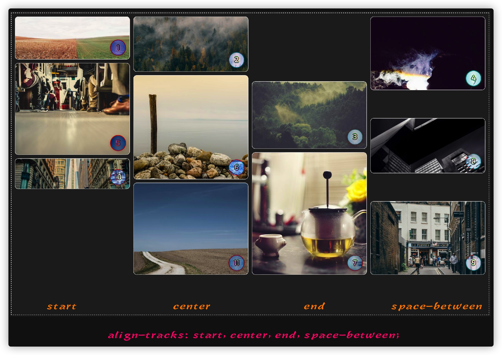</p>

<h2 class="content-title" data-index="2">使用JavaScript做降级处理</h2>

<p>目前为止，纯CSS实现的瀑布流布局仅得到Firefox或Firefox Nightly浏览器的支持。如果希望在其他浏览器也要实出瀑布流布局的效果，需要一定的JavaScript的脚本。@Ana Tudor 在她的《<a rel="nofollow" href="https://css-tricks.com/a-lightweight-masonry-solution/" target="_blank">A Lightweight Masonry Solution</a>》教程中对这方面做过详细的介绍。</p>

<p>我们来看一个简单的示例。在HTML中有一个瀑布流布局的容器，比如：</p>

<pre class="xml"><code class="xml"><span class="comment"><span class="comment">&lt;!-- HTML --&gt;</span></span>
<span class="tag"><span class="tag">&lt;<span class="title"><span class="title">div</span></span> <span class="attribute"><span class="attribute">class</span></span>=<span class="value"><span class="value">"grid__masonry"</span></span>&gt;</span></span><span class="tag"><span class="tag">&lt;/<span class="title"><span class="title">div</span></span>&gt;</span></span>
</code></pre>

<p>使用JavaScript动态往该容器中插入一些网格项目：</p>

<pre class="xml"><code class="xml">for (let i = 0; i <span class="tag"><span class="tag">&lt;<span class="title"><span class="title">=</span></span> <span class="attribute"><span class="attribute">50</span></span>; <span class="attribute"><span class="attribute">i</span></span>++) {
    <span class="attribute"><span class="attribute">const</span></span> <span class="attribute"><span class="attribute">div</span></span> = <span class="attribute"><span class="attribute">document.createElement</span></span>("<span class="attribute"><span class="attribute">div</span></span>");
    <span class="attribute"><span class="attribute">div.classList.add</span></span>("<span class="attribute"><span class="attribute">item</span></span>");
    <span class="attribute"><span class="attribute">div.style.backgroundImage</span></span> = `<span class="attribute"><span class="attribute">url</span></span>(<span class="attribute"><span class="attribute">https:</span></span>//<span class="attribute"><span class="attribute">picsum.photos</span></span>/<span class="attribute"><span class="attribute">500</span></span>/<span class="attribute"><span class="attribute">500</span></span>?<span class="attribute"><span class="attribute">random</span></span>=<span class="value"><span class="value">${i})`;</span></span>
    <span class="attribute"><span class="attribute">document.querySelector</span></span>("<span class="attribute"><span class="attribute">.grid__masonry</span></span>")<span class="attribute"><span class="attribute">.appendChild</span></span>(<span class="attribute"><span class="attribute">div</span></span>);
}
</span></span></code></pre>

<p>可以根据上面介绍的方式，使用CSS实现一个简单的瀑布流布局效果：</p>

<pre class="css"><code class="css"><span class="class"><span class="class">.grid__masonry</span></span> <span class="rules"><span class="rules">{
    <span class="rule"><span class="attribute"><span class="rule"><span class="attribute">display</span></span></span><span class="rule">:<span class="value"><span class="value"> grid;</span></span></span><span class="value"></span></span>
    <span class="rule"><span class="attribute"><span class="rule"><span class="attribute">grid-template-rows</span></span></span><span class="rule">:<span class="value"><span class="value"> masonry;</span></span></span><span class="value"></span></span>
    <span class="rule"><span class="attribute"><span class="rule"><span class="attribute">grid-template-columns</span></span></span><span class="rule">:<span class="value"><span class="value"> <span class="function"><span class="function">repeat(<span class="number"><span class="number">4</span></span>, <span class="number"><span class="number">1</span></span>fr)</span></span>;</span></span></span><span class="value"></span></span>
    <span class="rule"><span class="attribute"><span class="rule"><span class="attribute">gap</span></span></span><span class="rule">:<span class="value"><span class="value"> <span class="number"><span class="number">10</span></span>px;</span></span></span><span class="value"></span></span>
<span class="rule"><span class="rule">}</span></span></span><span class="rule"></span></span>
</code></pre>

<p>根据@Ana Tudor 在她的《<a rel="nofollow" href="https://css-tricks.com/a-lightweight-masonry-solution/" target="_blank">A Lightweight Masonry Solution</a>》教程提供的示例代码，我们可以使用下面的JavaScript代码，让其他浏览器也实现瀑布流布局效果：</p>

<pre class="php"><code class="php">let grids = [...document.querySelectorAll(<span class="string"><span class="string">'.grid__masonry'</span></span>)];

<span class="keyword"><span class="keyword">if</span></span>(grids.length &amp;&amp; getComputedStyle(grids[<span class="number"><span class="number">0</span></span>]).gridTemplateRows !== <span class="string"><span class="string">'masonry'</span></span>) {
    grids = grids.map(grid =&gt; ({
        _el: grid, 
        gap: parseFloat(getComputedStyle(grid).gridRowGap), 
        items: [...grid.childNodes].filter(c =&gt; c.nodeType === <span class="number"><span class="number">1</span></span> &amp;&amp; +getComputedStyle(c).gridColumnEnd !== -<span class="number"><span class="number">1</span></span>), 
        ncol: <span class="number"><span class="number">0</span></span>
    }));

    <span class="function"><span class="keyword"><span class="function"><span class="keyword">function</span></span></span><span class="function"> <span class="title"><span class="title">layout</span></span><span class="params"><span class="params">()</span></span> {</span></span>
        grids.<span class="keyword"><span class="keyword">forEach</span></span>(grid =&gt; {
            <span class="comment"><span class="comment">/* get the post relayout number of columns */</span></span>
            let ncol = getComputedStyle(grid._el).gridTemplateColumns.split(<span class="string"><span class="string">' '</span></span>).length;

            <span class="comment"><span class="comment">/* if the number of columns has changed */</span></span>
            <span class="keyword"><span class="keyword">if</span></span>(grid.ncol !== ncol) {
                <span class="comment"><span class="comment">/* update number of columns */</span></span>
                grid.ncol = ncol;

                <span class="comment"><span class="comment">/* revert to initial positioning, no margin */</span></span>
                grid.items.<span class="keyword"><span class="keyword">forEach</span></span>(c =&gt; c.style.removeProperty(<span class="string"><span class="string">'margin-top'</span></span>));

                <span class="comment"><span class="comment">/* if we have more than one column */</span></span>
                <span class="keyword"><span class="keyword">if</span></span>(grid.ncol &gt; <span class="number"><span class="number">1</span></span>) {
                    grid.items.slice(ncol).<span class="keyword"><span class="keyword">forEach</span></span>((c, i) =&gt; {
                        <span class="comment"><span class="comment">/* bottom edge of item above */</span></span>
                        let prev_fin = grid.items[i].getBoundingClientRect().bottom, 

                        <span class="comment"><span class="comment">/* top edge of current item */</span></span>
                        curr_ini = c.getBoundingClientRect().top ;

                        c.style.marginTop = `${prev_fin + grid.gap - curr_ini}px`
                    })
                }
            }
        })
    }

    addEventListener(<span class="string"><span class="string">'load'</span></span>, e =&gt; {
        layout(); <span class="comment"><span class="comment">/* initial load */</span></span>
        addEventListener(<span class="string"><span class="string">'resize'</span></span>, layout, <span class="keyword"><span class="keyword">false</span></span>) <span class="comment"><span class="comment">/* on resize */</span></span>
    }, <span class="keyword"><span class="keyword">false</span></span>);
}
</code></pre>

<p>最终的效果如下：</p>

<div style="margin-bottom: 20px">
<iframe height="600" style="width: 100%;" scrolling="no" title="Masonry Layout" src="./Grid布局：17-瀑布流布局_files/pobxLjw.html" frameborder="no" loading="lazy" allowtransparency="true" allowfullscreen="true">
  See the Pen <a rel="nofollow" href="https://codepen.io/airen/pen/pobxLjw">
  Masonry Layout</a> by Airen (<a rel="nofollow" href="https://codepen.io/airen">@airen</a>)
  on <a rel="nofollow" href="https://codepen.io">CodePen</a>.
</iframe>
</div>

<p>Firefox浏览器下的效果如下：</p>

<div style="margin-bottom: 20px">
<video controls="" width="100%" style="width: 100%; aspect-ratio: 16 / 9;" poster="/sites/default/files/blogs/2021/2109/css-masonry-9.jpg">
    <source src="/sites/default/files/blogs/2021/2109/css-masonry-9.mp4" type="video/mp4">
</video>
</div>

<h2 class="content-title" data-index="2">使用 @supports 做检测</h2>

<p>瀑布流布局只有 Firefox 和 Firefox Nightly 浏览器支持。如果你想让其他浏览器也能用纯CSS实现的瀑布流布局，可以使用<a href="https://www.w3cplus.com/css/css-at-rules-and-css-conditional.html" target="_blank">条件CSS</a>中的<a href="https://www.w3cplus.com/css3/supports-will-change-your-life.html" target="_blank"><code>@supports</code></a>做降级处理：</p>

<pre class="css"><code class="css"><span class="at_rule"><span class="at_rule">@supports (grid-template-rows: masonry) </span></span>{
    <span class="class"><span class="class">.list-masonry</span></span> <span class="rules"><span class="rules">{
        <span class="rule"><span class="attribute"><span class="rule"><span class="attribute">list-style</span></span></span><span class="rule">:<span class="value"><span class="value"> none;</span></span></span><span class="value"></span></span>
        <span class="rule"><span class="attribute"><span class="rule"><span class="attribute">margin</span></span></span><span class="rule">:<span class="value"><span class="value"> <span class="number"><span class="number">0</span></span>;</span></span></span><span class="value"></span></span>
        <span class="rule"><span class="attribute"><span class="rule"><span class="attribute">padding</span></span></span><span class="rule">:<span class="value"><span class="value"> <span class="number"><span class="number">0</span></span>;</span></span></span><span class="value"></span></span>
        <span class="rule"><span class="attribute"><span class="rule"><span class="attribute">display</span></span></span><span class="rule">:<span class="value"><span class="value"> grid;</span></span></span><span class="value"></span></span>
        <span class="rule"><span class="attribute"><span class="rule"><span class="attribute">grid-gap</span></span></span><span class="rule">:<span class="value"><span class="value"> <span class="function"><span class="function">var(--grid-gap)</span></span>;</span></span></span><span class="value"></span></span>
        <span class="rule"><span class="attribute"><span class="rule"><span class="attribute">grid-template-columns</span></span></span><span class="rule">:<span class="value"><span class="value"> <span class="function"><span class="function">repeat(auto-fill, minmax(<span class="number"><span class="number">16</span></span>em, <span class="number"><span class="number">1</span></span>fr)</span></span>);</span></span></span><span class="value"></span></span>
        <span class="rule"><span class="attribute"><span class="rule"><span class="attribute">grid-template-rows</span></span></span><span class="rule">:<span class="value"><span class="value"> masonry;</span></span></span><span class="value"></span></span>
    <span class="rule"><span class="rule">}</span></span></span><span class="rule"></span></span>
}
</code></pre>

<h2 class="content-title" data-index="2">使用CSS Houdini实现瀑布流布局</h2>

<p>在不久的将来，我们除了前面提到的一些实现瀑布流布局的方案之外，还可以使用 <a href="https://www.w3cplus.com/blog/tags/553.html" target="_blank">CSS Houdini</a> 的 <a rel="nofollow" href="https://drafts.css-houdini.org/css-layout-api/" target="_blank">CSS Layout API</a> 来定义一个瀑布流布局。@iamvdo在CSS Houdini示例集锦中就向大家展示了一个<a rel="nofollow" href="https://css-houdini.rocks/masonry/" target="_blank">使用CSS Houdini实现的瀑布流布局</a>：</p>

<div style="margin-bottom: 20px">
<iframe height="600" style="width: 100%;" scrolling="no" title="CSS Houdini Layout API: Masonry" src="./Grid布局：17-瀑布流布局_files/pojPXKx.html" frameborder="no" loading="lazy" allowtransparency="true" allowfullscreen="true">
  See the Pen <a rel="nofollow" href="https://codepen.io/iamvdo/pen/pojPXKx">
  CSS Houdini Layout API: Masonry</a> by Vincent De Oliveira (<a rel="nofollow" href="https://codepen.io/iamvdo">@iamvdo</a>)
  on <a rel="nofollow" href="https://codepen.io">CodePen</a>.
</iframe>
</div>

<p>使用CSS Layout API中的<code>registerLayout()</code>定义一个<code>masonry</code>的布局，代码如下：</p>

<pre class="cs"><code class="cs"><span class="comment"><span class="comment">// masonry.js</span></span>
registerLayout(<span class="string"><span class="string">'masonry'</span></span>, <span class="keyword"><span class="keyword">class</span></span> {
    <span class="keyword"><span class="keyword">static</span></span> <span class="keyword"><span class="keyword">get</span></span> inputProperties() {
        <span class="keyword"><span class="keyword">return</span></span> [ <span class="string"><span class="string">'--padding'</span></span>, <span class="string"><span class="string">'--columns'</span></span> ];
    }

    async intrinsicSizes() { <span class="comment"><span class="comment">/* TODO implement :) */</span></span> }
    async layout(children, edges, constraints, styleMap) {
        <span class="keyword"><span class="keyword">const</span></span> inlineSize = constraints.fixedInlineSize;

        <span class="keyword"><span class="keyword">const</span></span> padding = parseInt(styleMap.<span class="keyword"><span class="keyword">get</span></span>(<span class="string"><span class="string">'--padding'</span></span>).toString());
        <span class="keyword"><span class="keyword">const</span></span> columnValue = styleMap.<span class="keyword"><span class="keyword">get</span></span>(<span class="string"><span class="string">'--columns'</span></span>).toString();

        <span class="comment"><span class="comment">// We also accept 'auto', which will select the BEST number of columns.</span></span>
        <span class="keyword"><span class="keyword">let</span></span> columns = parseInt(columnValue);
        <span class="keyword"><span class="keyword">if</span></span> (columnValue == <span class="string"><span class="string">'auto'</span></span> || !columns) {
            columns = Math.ceil(inlineSize / <span class="number"><span class="number">350</span></span>); <span class="comment"><span class="comment">// MAGIC NUMBER \o/.</span></span>
        }

        <span class="comment"><span class="comment">// Layout all children with simply their column size.</span></span>
        <span class="keyword"><span class="keyword">const</span></span> childInlineSize = (inlineSize - ((columns + <span class="number"><span class="number">1</span></span>) * padding)) / columns;
        <span class="keyword"><span class="keyword">const</span></span> childFragments = await Promise.all(children.map((child) =&gt; {
            <span class="keyword"><span class="keyword">return</span></span> child.layoutNextFragment({fixedInlineSize: childInlineSize});
        }));

        <span class="keyword"><span class="keyword">let</span></span> autoBlockSize = <span class="number"><span class="number">0</span></span>;
        <span class="keyword"><span class="keyword">const</span></span> columnOffsets = Array(columns).fill(<span class="number"><span class="number">0</span></span>);
        <span class="keyword"><span class="keyword">for</span></span> (<span class="keyword"><span class="keyword">let</span></span> childFragment of childFragments) {
            <span class="comment"><span class="comment">// Select the column with the least amount of stuff in it.</span></span>
            <span class="keyword"><span class="keyword">const</span></span> min = columnOffsets.reduce((acc, val, idx) =&gt; {
                <span class="keyword"><span class="keyword">if</span></span> (!acc || val &lt; acc.val) {
                    <span class="keyword"><span class="keyword">return</span></span> {idx, val};
                }

                <span class="keyword"><span class="keyword">return</span></span> acc;
            }, {val: +Infinity, idx: -<span class="number"><span class="number">1</span></span>});

            childFragment.inlineOffset = padding + (childInlineSize + padding) * min.idx;
            childFragment.blockOffset = padding + min.val;

            columnOffsets[min.idx] = childFragment.blockOffset + childFragment.blockSize;
            autoBlockSize = Math.max(autoBlockSize, columnOffsets[min.idx] + padding);
        }

        <span class="keyword"><span class="keyword">return</span></span> {autoBlockSize, childFragments};
    }
});
</code></pre>

<p>这样就可以使用<code>CSS.layoutWorklet.addModule()</code>引入前面已定义好的瀑布流布局的JS文件，比如<code>masonry.js</code>：</p>

<pre class="cs"><code class="cs"><span class="keyword"><span class="keyword">if</span></span> (<span class="string"><span class="string">'layoutWorklet'</span></span> <span class="keyword"><span class="keyword">in</span></span> CSS) {
    <span class="comment"><span class="comment">// 把自定义的瀑布流布局脚本添加到Layout Worklet中</span></span>
    CSS.layoutWorklet.addModule(<span class="string"><span class="string">'masonry.js'</span></span>);
}
</code></pre>

<p>这样就可以在<code>div#masonry</code>使用<code>display:layout(masonry)</code>：</p>

<pre class="xml"><code class="xml"><span class="comment"><span class="comment">&lt;!-- HTML --&gt;</span></span>
<span class="tag"><span class="tag">&lt;<span class="title"><span class="title">div</span></span> <span class="attribute"><span class="attribute">id</span></span>=<span class="value"><span class="value">"masonry"</span></span>&gt;</span></span>
    <span class="tag"><span class="tag">&lt;<span class="title"><span class="title">div</span></span> <span class="attribute"><span class="attribute">class</span></span>=<span class="value"><span class="value">"masonry__item"</span></span>&gt;</span></span><span class="tag"><span class="tag">&lt;/<span class="title"><span class="title">div</span></span>&gt;</span></span>
    <span class="comment"><span class="comment">&lt;!-- ... --&gt;</span></span>
    <span class="tag"><span class="tag">&lt;<span class="title"><span class="title">div</span></span> <span class="attribute"><span class="attribute">class</span></span>=<span class="value"><span class="value">"masonry__item"</span></span>&gt;</span></span><span class="tag"><span class="tag">&lt;/<span class="title"><span class="title">div</span></span>&gt;</span></span>
<span class="tag"><span class="tag">&lt;/<span class="title"><span class="title">div</span></span>&gt;</span></span>    

/* CSS */
#masonry {
    display: layout(masonry);
    --padding: 20;
    --columns: 3;
}
</code></pre>

<p>正如这个示例所示，使用CSS Layout API可以自定义更多的布局方式，而且使用起来也更灵活，但学习他有一定的成本（可能成本也较高），需要在CSS和JavaScript两个方面都有一定的造诣。因此，CSS Layout API以后注定是小部分开发者的玩具，最终出现的局面一定是少部分人创造，大部分人直接使用。</p>

<h2 class="content-title" data-index="2">小结</h2>

<p>我们是幸福的，这几年CSS在高速发展，有很多新的CSS特性提出，并且得到浏览器的支持。正如今天我们所聊的瀑布流布局，它是一个新特性，而且是个实验性特性。虽然说还没得到众多主流浏览器支持，但并不用过于担心，我想在不久的将来，这个特性就会得到更多的浏览器支持。当然，如果你在构建一个新的内部项目，那么可以尝试着使用这个新特性，也如文章中所阐述的，也可以基于这个新特性，用一点点JavaScript脚本让更多浏览器支持瀑布流布局效果。</p>

<p>另外，你也可以尝试着用用该布局特性，如果遇到问题，或者无法完成在以前的实现中能够完成的任务，<a rel="nofollow" href="https://github.com/w3c/csswg-drafts/issues/" target="_blank">可以向CSSWG提出你的问题</a>。这样，我们才能更快的用上这个新特性。</p>
</div></div></div>  </div>

  
   
    <div id="node_footer" class="clearfix">
              <div class="previous-next"><span class="prev">上一篇: </span><a href="https://www.w3cplus.com/css/grid-layout-part-16.html" target="_blank">图解CSS: Grid布局（Part16）</a> | <span class="next">下一篇: </span><a href="https://www.w3cplus.com/css/grid-layout-part-18.html" target="_blank">图解CSS: Grid布局（Part18）</a></div>            
    </div>

        

</div>  </div>
</div>
  </div>

        </div>

      </div>
    </div>

    
          <div id="sidebar-second" class="col-extra" style="position: sticky; top: 80px;">
        <!-- <script type="text/javascript">document.write(unescape('%3Cdiv id="bdcs"%3E%3C/div%3E%3Cscript charset="utf-8" src="//rp.baidu.com/rp3w/3w.js?sid=10994702955876242907') + '&t=' + (Math.ceil(new Date()/3600000)) + unescape('"%3E%3C/script%3E'));</script> -->
          <div class="region region-sidebar-second">
    <div id="block-custom-search-blocks-1" class="block block-custom-search-blocks">

    
  <div class="content">
    <form class="search-form" role="search" action="https://www.w3cplus.com/css/grid-layout-part-17.html?expire=1699867748&amp;code=k498nlFJRVU&amp;sign=138ae06cfe6fcc07df425ca279026de7" method="post" id="custom-search-blocks-form-1" accept-charset="UTF-8" target="_self"><div><div class="form-item form-type-textfield form-item-custom-search-blocks-form-1">
  <label class="element-invisible" for="edit-custom-search-blocks-form-1--2">Search this site </label>
 <input title="请输入您想搜索的关键词。" class="custom-search-box form-text" placeholder="" type="text" id="edit-custom-search-blocks-form-1--2" name="custom_search_blocks_form_1" value="" size="15" maxlength="128">
</div>
<input type="hidden" name="delta" value="1">
<input type="hidden" name="form_build_id" value="form-6-wxQv7xAlVxT7acyGHO6D4WzaQCg_asXn4S9keelHw">
<input type="hidden" name="form_id" value="custom_search_blocks_form_1">
<div class="form-actions form-wrapper" id="edit-actions"><input type="submit" id="edit-submit" name="op" value="搜索" class="form-submit"></div></div></form>  </div>
</div>
<div id="block-block-53" class="block block-block">

    <h2>直达目的地(^_^)</h2>
  
  <div class="content">
    <div class="node-blog-title"><div class="atalog"><ul class="mb-2"> <li><a data-index="0" href="javascript:;" class="active">什么是瀑布流布局</a></li><li><a data-index="1" href="javascript:;">瀑布流布局真的是一个网格布局吗？</a></li><li><a data-index="2" href="javascript:;">开启瀑布流布局</a></li><li><a data-index="3" href="javascript:;">我们可以使用成熟的CSS布局方式实现瀑布流布局</a></li><li><a data-index="4" href="javascript:;">网格布局的瀑布流特性</a></li><li> <ul class="mb-2"><li><a data-index="5" href="javascript:;">masonry-auto-flow</a></li><li><a data-index="6" href="javascript:;">justify-tracks 和 align-tracks</a></li></ul></li><li><a data-index="7" href="javascript:;">使用JavaScript做降级处理</a></li><li><a data-index="8" href="javascript:;">使用 @supports 做检测</a></li><li><a data-index="9" href="javascript:;">使用CSS Houdini实现瀑布流布局</a></li><li><a data-index="10" href="javascript:;">小结</a></li></ul></div></div>

<script>
$('.node-blog h2').addClass('content-title');
$('.node-blog h3').addClass('content-title');
$('.node-blog h4').addClass('content-title');
$('.node-blog h5').addClass('content-title');
//  给 h2 到 h5 增加一个 data-index 的自定义属性
$('.node-blog h2').attr('data-index', 2);
$('.node-blog h3').attr('data-index', 3);
$('.node-blog h4').attr('data-index', 4);
$('.node-blog h5').attr('data-index', 5);

//  函数的一个参数是标题级别，第二个参数是第一个标题的索引值
function atalog(titleIndex, start) {
    //  存储 HTML 和当前的索引值
    var el = {
        el: '',
        index: start
    };
    var current = 0;  //  已遍历的数量

    for (var i = start;i < $('.content-title').length;i ++) {
        if (i < current) {
            //  如果当前 i 的值小于已遍历的数量就跳过
            continue;
        }

        if ($('.content-title').eq(i).attr('data-index') > titleIndex) {
            //  如果是更小一级的标题就调用自身继续查找
            var result = atalog($('.content-title').eq(i).attr('data-index'), i);
            //  把返回的 HTML 添加到当前函数的 el 中
            el.el += '<li> ' + result.el + '</li>';
            current = result.index + 1;  //  设置已遍历的数量
            el.index = result.index;  //  设置索引
            continue;  //  跳过本次循环
        }

        if ($('.content-title').eq(i).attr('data-index') < titleIndex) {
            //  如果是更大一级的标题就返回已生成的 HTML 目录
            el.el = '<ul class="mb-2">' + el.el + '</ul>';
            return el;
        }
        //  生成 HTML 目录
        el.el += '<li><a data-index="' + i + '" href="javascript:;">' + $('.content-title').eq(i).text() + '</a></li>';
        el.index = i;  //  设置当前的索引值为 i
    }
    //  添加列表的外层 ul
    el.el = '<ul class="mb-2"> ' + el.el + '</ul>';
    return el;  //  返回生成的 HTML 目录
}

//  调用生成目录的函数，从第 0 个 h2 开始
var el = atalog(2, 0);
//  把生成的目录插入到文章的开头
$('.node-blog-title').prepend('<div class="atalog">' + el.el + '</div>');
$(".node-blog-title .atalog > ul > li >a ").eq(0).addClass('active');
//  给生成的目录添加点击事件
$('.node-blog-title .atalog a').on('click', function () {
    //  设置滚动条的高度为标题的 offsetTop
     var topPos = $('.content-title').eq($(this).attr('data-index')).offset().top;
var position = topPos - 80;
    $(document).scrollTop(position);
$('.node-blog-title .atalog a').removeClass('active')
    $(this).toggleClass('active')
});


</script>

  </div>
</div>
<div id="block-block-49" class="block block-block">

    
  <div class="content">
    <div style="margin-bottom: 5px;"><a rel="nofollow" href="https://s.juejin.cn/ds/iJrTure4/" target="_blank" title="现代 CSS"></a></div>

<div style="margin-bottom: 5px;"><a rel="nofollow" href="https://s.juejin.cn/ds/DEHQUMj/" target="_blank" title="防御式 CSS 精讲"></a></div>

<div style="margin-bottom: 5px;"><a rel="nofollow" href="https://s.juejin.cn/ds/iJrwMDDU/" target="_blank" title="现代 Web 布局"></a></div>


  </div>
</div>
  </div>
      </div>
    

  </div>
</div>

  <div id="footer-col" class="footer-col">
    <div class="container">
        <div class="region region-footer-col">
    <div id="block-block-39" class="block block-block">

    <h2>关于我们</h2>
  
  <div class="content">
    <a class="media-object" href="http://www.w3cplus.com/">W3cplus</a>
<div class="media-body">
	<p>W3cplus是一个致力于推广国内前端行业的技术博客。它以探索为己任，不断活跃在行业技术最前沿，努力提供高质量前端技术博文；其文章范围广泛，主要以CSS、HTML、JavaScript、A11Y、动画等教程为主。</p>
</div>
  </div>
</div>
<div id="block-block-40" class="block block-block">

    <h2>关于站长</h2>
  
  <div class="content">
    <p><a class="media-object" href="https://www.w3cplus.com/" target="_blank">大漠</a></p>
<div class="media-body">
	<p>常用昵称“大漠”，<a href="https://www.w3cplus.com/" target="_blank">W3CPlus</a>创始人，曾就职于淘宝。对HTML、CSS和A11Y等领域有一定的认识和丰富的实践经验。现在主要从事智能UI领域的探讨和学习！。CSS和Drupal中国布道者。2014年出版《<a href="https://www.w3cplus.com/book-comment.html">图解CSS3：核心技术与案例实战</a>》。</p>
	<div class="social">
		<a rel="nofollow" class="github" href="https://github.com/airen" target="_blank" title="github">github</a> <a rel="nofollow" class="twitter" href="https://twitter.com/w3cplus" target="_blank" title="twitter">twitter</a></div>
</div>
<p>&nbsp;</p>
  </div>
</div>
<div id="block-block-41" class="block block-block">

    <h2>我的作品</h2>
  
  <div class="content">
    <a class="media-object" href="https://www.w3cplus.com/book-comment.html" target="_blank">图解CSS3</a>
<div class="media-body">
	<p>本书是历时2载的心血之作，根据最新的CSS撰写，融入了作者在CSS领域多年的使用经验，旨在将本书打造成为CSS领域最权威和实用的专业著作，供没有经验的读者系统学习，供有经验的读者参考备查。新版在《<a href="https://www.w3cplus.com/blog/tags/674.html">图解SS</a>》中持续更新！</p></div>
  </div>
</div>
  </div>
    </div>
  </div> 

  <div id="footer" class="footer">
    <div class="container">
        <div class="region region-footer">
    <div id="block-block-54" class="block block-block">

    
  <div class="content">
        <p><a rel="nofollow" href="http://www.beian.miit.gov.cn/" target="_blank">湘B2-20110104-7</a>，衡阳市雅米信息技术有限公司 © 2011-2022 <a href="https://www.w3cplus.com/page/26.html" target="_blank">W3CPLUS</a>，感谢<a rel="nofollow" href="https://www.drupal.org/" target="_blank">Drupal</a>开源技术。感谢<a rel="nofollow" href="https://www.qiniu.com/" target="_blank">七牛云存储</a>提供静态资源空间。</p>
  </div>
</div>
  </div>
    </div>
  </div> 

<div id="totop" style="position: fixed; bottom: 50px; right: 15px; cursor: pointer; z-index: 999999; display: block; opacity: 1;">
  <!-- <div id="zhi12-shang-exp-2" class="shang-wrap" style="text-align: center;position:absolute;right: 0;bottom: 130%;z-index: 9999;">
    <div><a class="zhi12-popup zhi12-widget" rel="nofollow" href="//www.zhi12.com/paycenter/reward?entity=user&id=5491" target="_blank"></a></div>
</div> -->
    <a id="topLink" title="返回顶部">返回顶部</a>
</div>  <script type="text/javascript" src="./Grid布局：17-瀑布流布局_files/js_VU7P4CTgUZdF2SyFko5LLAg9ZK0OSVjXVaAFnTLgVt0.js.下载"></script>
  
  <script type="text/javascript" src="./Grid布局：17-瀑布流布局_files/respond.min.js.下载"></script>
<script type="text/javascript" src="./Grid布局：17-瀑布流布局_files/js_ypadrG4kz9-JBpNOXmgjyVozLCJG_1RP3Ig-iqWR8n0.js.下载"></script>
<script type="text/javascript" src="./Grid布局：17-瀑布流布局_files/js_YFY-zVcRx2bEEpwBdCXta7mOli3xeW_KMe7Y6Mv8zGk.js.下载"></script>
<script type="text/javascript" src="./Grid布局：17-瀑布流布局_files/js_xP4aMPEI1iZ1ZrZMlSgsTllQqvH8oWbOQ7JVFWyrFCo.js.下载"></script>
<script type="text/javascript">
<!--//--><![CDATA[//><!--
jQuery.extend(Drupal.settings, {"basePath":"\/","pathPrefix":"","ajaxPageState":{"theme":"w3cplusV2","theme_token":"gEYtWPraJtYDxTKXxn9eV2yblfy2lc-MwUAuE8OWZ40","js":{"modules\/statistics\/statistics.js":1,"sites\/all\/modules\/contrib\/respondjs\/lib\/respond.min.js":1,"sites\/all\/modules\/contrib\/jquery_update\/replace\/jquery\/1.10\/jquery.min.js":1,"misc\/jquery-extend-3.4.0.js":1,"misc\/jquery-html-prefilter-3.5.0-backport.js":1,"misc\/jquery.once.js":1,"misc\/drupal.js":1,"public:\/\/languages\/zh-hans_71GwLEjcRL9b45LGd77xwMMW4YJ5etdnokx7XZMwKAc.js":1,"sites\/all\/modules\/contrib\/custom_search\/js\/custom_search.js":1,"sites\/all\/themes\/w3cplusV2\/js\/highlight.pack.js":1,"sites\/all\/themes\/w3cplusV2\/js\/main.js":1},"css":{"modules\/system\/system.base.css":1,"modules\/system\/system.menus.css":1,"modules\/system\/system.messages.css":1,"modules\/system\/system.theme.css":1,"modules\/field\/theme\/field.css":1,"modules\/node\/node.css":1,"modules\/search\/search.css":1,"modules\/user\/user.css":1,"sites\/all\/modules\/contrib\/views\/css\/views.css":1,"sites\/all\/modules\/contrib\/ckeditor\/ckeditor.css":1,"sites\/all\/modules\/contrib\/ctools\/css\/ctools.css":1,"sites\/all\/modules\/contrib\/paywall\/includes\/paywall_php_sdk\/paywall.css":1,"sites\/all\/modules\/contrib\/custom_search\/custom_search.css":1,"sites\/all\/themes\/w3cplusV2\/css\/style.css":1}},"custom_search":{"form_target":"_self","solr":0},"statistics":{"data":{"nid":"2738"},"url":"\/modules\/statistics\/statistics.php"},"urlIsAjaxTrusted":{"\/css\/grid-layout-part-17.html?expire=1699867748\u0026code=k498nlFJRVU\u0026sign=138ae06cfe6fcc07df425ca279026de7":true}});
//--><!]]>
</script>
<script src="./Grid布局：17-瀑布流布局_files/jquery.colorbox-min.js.下载"></script>


<script>
var _hmt = _hmt || [];
(function() {
  var hm = document.createElement("script");
  hm.src = "https://hm.baidu.com/hm.js?177319b798978621f83845b12c86fa29";
  var s = document.getElementsByTagName("script")[0]; 
  s.parentNode.insertBefore(hm, s);
})();
</script>  
<span class="f0a02"></span>
<div id="cboxOverlay" style="display: none;"></div><div id="colorbox" class="" role="dialog" tabindex="-1" style="display: none;"><div id="cboxWrapper"><div><div id="cboxTopLeft" style="float: left;"></div><div id="cboxTopCenter" style="float: left;"></div><div id="cboxTopRight" style="float: left;"></div></div><div style="clear: left;"><div id="cboxMiddleLeft" style="float: left;"></div><div id="cboxContent" style="float: left;"><div id="cboxTitle" style="float: left;"></div><div id="cboxCurrent" style="float: left;"></div><button type="button" id="cboxPrevious"></button><button type="button" id="cboxNext"></button><button type="button" id="cboxSlideshow"></button><div id="cboxLoadingOverlay" style="float: left;"></div><div id="cboxLoadingGraphic" style="float: left;"></div></div><div id="cboxMiddleRight" style="float: left;"></div></div><div style="clear: left;"><div id="cboxBottomLeft" style="float: left;"></div><div id="cboxBottomCenter" style="float: left;"></div><div id="cboxBottomRight" style="float: left;"></div></div></div><div style="position: absolute; width: 9999px; visibility: hidden; display: none; max-width: none;"></div></div></body></html>